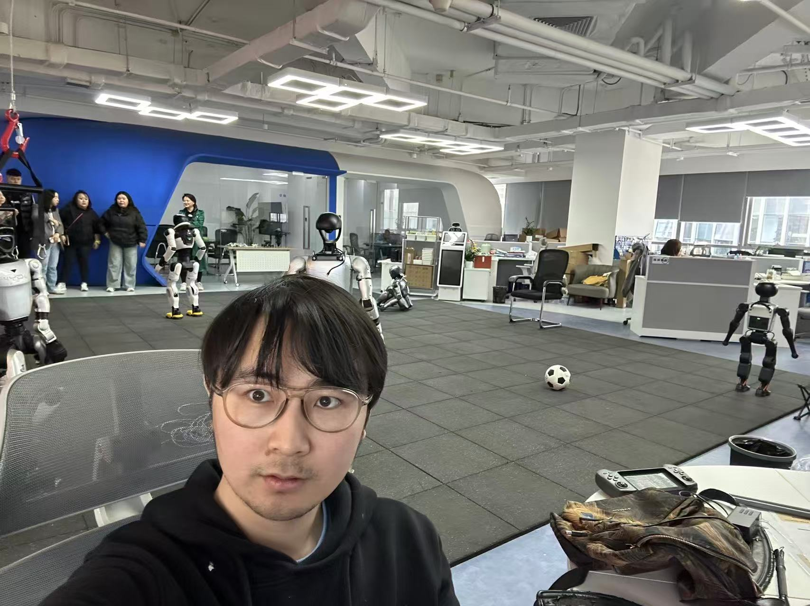

<!DOCTYPE html>
<html lang="zh-CN">
<head>
    <meta charset="UTF-8">
    <meta name="viewport" content="width=device-width, initial-scale=1.0">
    <title>陈桐 - 3D Portfolio</title>
    <script src="https://cdn.tailwindcss.com"></script>
    <script src="https://unpkg.com/react@18/umd/react.production.min.js"></script>
    <script src="https://unpkg.com/react-dom@18/umd/react-dom.production.min.js"></script>
    <script src="https://unpkg.com/@babel/standalone/babel.min.js"></script>
    <style>
        @import url('https://fonts.googleapis.com/css2?family=Inter:wght@300;400;500;600;700&display=swap');
        
        * {
            margin: 0;
            padding: 0;
            box-sizing: border-box;
        }
        
        body {
            font-family: 'Inter', sans-serif;
            background: linear-gradient(135deg, #0f0f23 0%, #1a1a2e 50%, #16213e 100%);
            color: white;
            overflow-x: hidden;
        }
        
        .gradient-text {
            background: linear-gradient(135deg, #667eea 0%, #764ba2 50%, #f093fb 100%);
            -webkit-background-clip: text;
            -webkit-text-fill-color: transparent;
            background-clip: text;
        }
        
        .gold-gradient {
            background: linear-gradient(135deg, #f5af19 0%, #f12711 100%);
            -webkit-background-clip: text;
            -webkit-text-fill-color: transparent;
            background-clip: text;
        }
        
        .card-hover {
            transition: all 0.3s ease;
        }
        
        .card-hover:hover {
            transform: translateY(-10px);
            box-shadow: 0 20px 40px rgba(102, 126, 234, 0.3);
        }
        
        .floating {
            animation: floating 3s ease-in-out infinite;
        }
        
        @keyframes floating {
            0%, 100% { transform: translateY(0px); }
            50% { transform: translateY(-20px); }
        }
        
        .pulse-ring {
            animation: pulse-ring 2s infinite;
        }
        
        @keyframes pulse-ring {
            0% { transform: scale(0.8); opacity: 1; }
            100% { transform: scale(1.5); opacity: 0; }
        }
        
        .typing-effect {
            border-right: 2px solid #667eea;
            animation: blink 0.7s infinite;
        }
        
        @keyframes blink {
            0%, 100% { border-color: #667eea; }
            50% { border-color: transparent; }
        }
        
        .scroll-indicator {
            animation: bounce 2s infinite;
        }
        
        @keyframes bounce {
            0%, 20%, 50%, 80%, 100% { transform: translateY(0); }
            40% { transform: translateY(-10px); }
            60% { transform: translateY(-5px); }
        }
        
        .glass-effect {
            background: rgba(255, 255, 255, 0.05);
            backdrop-filter: blur(10px);
            border: 1px solid rgba(255, 255, 255, 0.1);
        }
        
        .nav-link {
            position: relative;
        }
        
        .nav-link::after {
            content: '';
            position: absolute;
            bottom: -2px;
            left: 0;
            width: 0;
            height: 2px;
            background: linear-gradient(90deg, #667eea, #764ba2);
            transition: width 0.3s ease;
        }
        
        .nav-link:hover::after {
            width: 100%;
        }
        
        .project-card {
            position: relative;
            overflow: hidden;
        }
        
        .project-card::before {
            content: '';
            position: absolute;
            top: 0;
            left: -100%;
            width: 100%;
            height: 100%;
            background: linear-gradient(90deg, transparent, rgba(255,255,255,0.1), transparent);
            transition: left 0.5s ease;
        }
        
        .project-card:hover::before {
            left: 100%;
        }
        
        .skill-bar {
            height: 8px;
            background: rgba(255,255,255,0.1);
            border-radius: 4px;
            overflow: hidden;
        }
        
        .skill-progress {
            height: 100%;
            background: linear-gradient(90deg, #667eea, #764ba2);
            border-radius: 4px;
            transition: width 1s ease;
        }
        
        @keyframes fadeIn {
            from { opacity: 0; transform: translateY(20px); }
            to { opacity: 1; transform: translateY(0); }
        }
        
        .animate-fadeIn {
            animation: fadeIn 0.5s ease-out;
        }
        
        .animate-pulse {
            animation: pulse 2s infinite;
        }
        
        @keyframes pulse {
            0%, 100% { opacity: 1; }
            50% { opacity: 0.7; }
        }
        
        /* 图片优化 */
        .project-image {
            image-rendering: -webkit-optimize-contrast;
            image-rendering: crisp-edges;
            -webkit-backface-visibility: hidden;
            backface-visibility: hidden;
            transform: translateZ(0);
        }
    </style>
</head>
<body>
    <div id="root"></div>
    
    <script type="text/babel">
        const { useState, useEffect, useRef } = React;
        
        // 主题1：机器人仿真与具身智能
        const robotProjects = [
            {
                id: 1,
                name: "Unitree RL Gym",
                description: {
                    zh: "宇树机器人强化学习实现，支持Go2、H1、G1等机器人，集成Isaac Gym和MuJoCo仿真平台",
                    en: "Unitree robot reinforcement learning implementation, supporting Go2, H1, G1 robots, integrated with Isaac Gym and MuJoCo simulation platforms"
                },
                tags: ["Isaac Sim", "MuJoCo", "Reinforcement Learning", "Unitree"],
                features: {
                    zh: [
                        "支持Go2四足机器人、H1/G1人形机器人",
                        "集成Isaac Gym和MuJoCo双仿真平台",
                        "提供PPO、SAC等主流强化学习算法",
                        "支持Sim-to-Real迁移，从仿真到真实机器人部署",
                        "完整的训练、评估、可视化工具链",
                        "支持GPU并行加速，同时训练多个机器人实例"
                    ],
                    en: [
                        "Support for Go2 quadruped, H1/G1 humanoid robots",
                        "Integrated with both Isaac Gym and MuJoCo simulation platforms",
                        "Provides mainstream RL algorithms: PPO, SAC, etc.",
                        "Sim-to-Real transfer from simulation to real robot deployment",
                        "Complete toolchain for training, evaluation, and visualization",
                        "GPU parallel acceleration, training multiple robot instances simultaneously"
                    ]
                },
                overview: {
                    zh: "Unitree RL Gym 是一个专为宇树机器人设计的强化学习仿真环境，提供从快速原型设计到真实机器人部署的完整解决方案。该项目通过高度优化的物理引擎和并行计算能力，让机器人学习速度提升数十倍。",
                    en: "Unitree RL Gym is a reinforcement learning simulation environment designed specifically for Unitree robots, providing a complete solution from rapid prototyping to real robot deployment. This project achieves tens of times faster robot learning through highly optimized physics engines and parallel computing capabilities."
                },
                techStack: {
                    zh: [
                        "PyTorch: 深度学习框架",
                        "Isaac Gym: NVIDIA GPU加速物理仿真",
                        "MuJoCo: 多用途物理引擎",
                        "Gymnasium: 强化学习环境接口",
                        "WandB: 实验追踪与可视化",
                        "NumPy: 数值计算库"
                    ],
                    en: [
                        "PyTorch: Deep Learning Framework",
                        "Isaac Gym: NVIDIA GPU Accelerated Physics Simulation",
                        "MuJoCo: Multi-purpose Physics Engine",
                        "Gymnasium: Reinforcement Learning Environment Interface",
                        "WandB: Experiment Tracking and Visualization",
                        "NumPy: Numerical Computing Library"
                    ]
                },
                useCases: {
                    zh: [
                        "四足机器人行走与跑步：研究不同地形下的步态优化",
                        "人形机器人平衡控制：站立、行走、抗扰动测试",
                        "多机器人协作：研究多个机器人之间的协调策略",
                        "障碍规避：复杂环境中的路径规划与避障",
                        "物体抓取：研究机器人的操作技能"
                    ],
                    en: [
                        "Quadruped Locomotion: Optimizing gaits across different terrains",
                        "Humanoid Balance Control: Standing, walking, and disturbance rejection",
                        "Multi-robot Coordination: Collaborative strategies between multiple robots",
                        "Obstacle Avoidance: Path planning in complex environments",
                        "Object Manipulation: Researching robotic grasping and manipulation skills"
                    ]
                },
                quickStart: {
                    zh: [
                        "克隆仓库: git clone https://github.com/unitreerobotics/unitree_rl_gym.git",
                        "创建虚拟环境: conda create -n unitree python=3.8",
                        "安装依赖: pip install -r requirements.txt",
                        "运行示例: python train.py --task=go2"
                    ],
                    en: [
                        "Clone repository: git clone https://github.com/unitreerobotics/unitree_rl_gym.git",
                        "Create virtual environment: conda create -n unitree python=3.8",
                        "Install dependencies: pip install -r requirements.txt",
                        "Run example: python train.py --task=go2"
                    ]
                },
                github: "https://github.com/unitreerobotics/unitree_rl_gym",
                image: "assets/Unitree RL GYM.gif"
            },
            {
                id: 2,
                name: "Unitree RL Mjlab",
                description: {
                    zh: "基于MuJoCo的轻量级强化学习项目，支持Go2、A2、G1、H1_2、R1等机器人",
                    en: "Lightweight reinforcement learning project based on MuJoCo, supporting Go2, A2, G1, H1_2, R1 robots"
                },
                tags: ["MuJoCo", "Reinforcement Learning", "Sim-to-Real", "Unitree"],
                features: {
                    zh: [
                        "超轻量级设计，资源占用少，启动速度快",
                        "支持Go2、A2、G1、H1_2、R1等多种宇树机器人",
                        "内置PPO、SAC、TD3等强化学习算法",
                        "支持实时可视化训练过程和结果",
                        "一键导出策略到真实机器人部署",
                        "灵活的奖励函数配置和任务定制"
                    ],
                    en: [
                        "Ultra-lightweight design, minimal resource usage, fast startup",
                        "Supports multiple Unitree robots: Go2, A2, G1, H1_2, R1",
                        "Built-in RL algorithms: PPO, SAC, TD3, etc.",
                        "Real-time visualization of training process and results",
                        "One-click policy export to real robot deployment",
                        "Flexible reward function configuration and task customization"
                    ]
                },
                overview: {
                    zh: "Unitree RL Mjlab 是一个轻量级但功能强大的强化学习框架，专注于快速原型设计和实验迭代。相比于 Unitree RL Gym，它更加注重易用性和部署效率，适合研究人员和开发者快速验证想法。",
                    en: "Unitree RL Mjlab is a lightweight yet powerful reinforcement learning framework focused on rapid prototyping and experimental iteration. Compared to Unitree RL Gym, it emphasizes ease of use and deployment efficiency, making it perfect for researchers and developers to quickly validate ideas."
                },
                techStack: {
                    zh: [
                        "MuJoCo: 高性能物理仿真引擎",
                        "PyTorch: 深度学习训练框架",
                        "Gymnasium: 强化学习环境标准",
                        "NumPy: 科学计算库",
                        "Matplotlib: 数据可视化",
                        "JAX (可选): 高性能数值计算加速"
                    ],
                    en: [
                        "MuJoCo: High-performance physics simulation engine",
                        "PyTorch: Deep learning training framework",
                        "Gymnasium: RL environment standard",
                        "NumPy: Scientific computing library",
                        "Matplotlib: Data visualization",
                        "JAX (Optional): High-performance numerical computing acceleration"
                    ]
                },
                useCases: {
                    zh: [
                        "快速算法原型：快速测试新的强化学习算法",
                        "教育与教学：机器人学习的教学工具",
                        "研究实验：学术研究的实验平台",
                        "策略调试：Sim-to-Real前的策略验证",
                        "机器人竞赛：竞赛前的策略训练"
                    ],
                    en: [
                        "Rapid Algorithm Prototyping: Quick testing of new RL algorithms",
                        "Education and Teaching: Learning tool for robotics education",
                        "Research Experiments: Experimental platform for academic research",
                        "Policy Debugging: Policy validation before Sim-to-Real transfer",
                        "Robot Competitions: Strategy training before competitions"
                    ]
                },
                quickStart: {
                    zh: [
                        "克隆仓库: git clone https://github.com/unitreerobotics/unitree_rl_mjlab.git",
                        "安装依赖: pip install -r requirements.txt",
                        "训练Go2: python train.py --robot=go2",
                        "可视化策略: python play.py --checkpoint=path/to/checkpoint.pt"
                    ],
                    en: [
                        "Clone repository: git clone https://github.com/unitreerobotics/unitree_rl_mjlab.git",
                        "Install dependencies: pip install -r requirements.txt",
                        "Train Go2: python train.py --robot=go2",
                        "Visualize policy: python play.py --checkpoint=path/to/checkpoint.pt"
                    ]
                },
                github: "https://github.com/unitreerobotics/unitree_rl_mjlab",
                image: "assets/Unitree RL Mjlab.webp"
            },
            {
                id: 3,
                name: "NVIDIA Isaac Sim",
                description: {
                    zh: "NVIDIA官方开源仿真平台，用于在真实虚拟环境中开发、测试、训练AI驱动机器人",
                    en: "NVIDIA's official open-source simulation platform for developing, testing, and training AI-driven robots in realistic virtual environments"
                },
                tags: ["Isaac Sim", "Omniverse", "Physics Simulation", "GPU Acceleration"],
                features: {
                    zh: [
                        "照片级真实感渲染，基于RTX光追技术",
                        "支持大规模多机器人并行仿真",
                        "集成Omniverse生态，协作式开发",
                        "丰富的机器人和环境资产库",
                        "实时光学、物理、传感器模拟",
                        "多种导出格式和部署工具链"
                    ],
                    en: [
                        "Photorealistic rendering based on RTX ray-tracing technology",
                        "Supports large-scale multi-robot parallel simulation",
                        "Omniverse ecosystem integration for collaborative development",
                        "Rich robot and environment asset libraries",
                        "Real-time optical, physical, and sensor simulation",
                        "Multiple export formats and deployment toolchains"
                    ]
                },
                overview: {
                    zh: "NVIDIA Isaac Sim 是一个强大的机器人仿真平台，利用 NVIDIA RTX 的图形技术和 Omniverse 平台提供照片级逼真的虚拟环境。它支持各种机器人应用，从研究和原型设计到训练和测试，是行业标准的机器人仿真解决方案。",
                    en: "NVIDIA Isaac Sim is a powerful robotics simulation platform that leverages NVIDIA RTX graphics technology and Omniverse platform to deliver photorealistic virtual environments. It supports various robotic applications from research and prototyping to training and testing, and is an industry-standard robotics simulation solution."
                },
                techStack: {
                    zh: [
                        "Omniverse: NVIDIA协作式3D平台",
                        "RTX: NVIDIA光追渲染技术",
                        "PhysX: 高性能物理引擎",
                        "USD: 通用场景描述格式",
                        "Python: 自动化脚本语言",
                        "ROS/ROS2: 机器人操作系统集成"
                    ],
                    en: [
                        "Omniverse: NVIDIA collaborative 3D platform",
                        "RTX: NVIDIA ray-tracing technology",
                        "PhysX: High-performance physics engine",
                        "USD: Universal Scene Description format",
                        "Python: Automation scripting language",
                        "ROS/ROS2: Robot Operating System integration"
                    ]
                },
                useCases: {
                    zh: [
                        "自主导航研究：在复杂环境中测试导航算法",
                        "计算机视觉：生成合成数据集进行模型训练",
                        "机械手仿真：精密物体抓取和操作研究",
                        "多机器人协作：测试多个机器人的协调策略",
                        "工业自动化：生产线和仓库物流优化"
                    ],
                    en: [
                        "Autonomous Navigation Research: Testing navigation algorithms in complex environments",
                        "Computer Vision: Generating synthetic datasets for model training",
                        "Robotic Manipulation: Precision grasping and manipulation research",
                        "Multi-robot Coordination: Testing coordination strategies for multiple robots",
                        "Industrial Automation: Production line and warehouse logistics optimization"
                    ]
                },
                quickStart: {
                    zh: [
                        "安装Isaac Sim: 使用Omniverse Launcher安装",
                        "运行示例: 加载示例场景并运行基本仿真",
                        "配置机器人: 选择并配置机器人模型",
                        "开发脚本: 使用Python API自定义仿真逻辑"
                    ],
                    en: [
                        "Install Isaac Sim: Use Omniverse Launcher for installation",
                        "Run Examples: Load example scenes and run basic simulations",
                        "Configure Robot: Select and configure robot models",
                        "Develop Scripts: Use Python API to customize simulation logic"
                    ]
                },
                github: "https://github.com/isaac-sim/IsaacSim",
                image: "assets/NVIDIA Isaac Sim.jpg"
            },
            {
                id: 4,
                name: "DeepMind MuJoCo",
                description: {
                    zh: "DeepMind开源物理引擎，专为机器人、生物力学、图形动画等领域的快速准确仿真设计",
                    en: "DeepMind's open-source physics engine designed for fast and accurate simulation in robotics, biomechanics, graphics, and animation"
                },
                tags: ["MuJoCo", "Physics Engine", "Robot Simulation", "DeepMind"],
                features: {
                    zh: [
                        "高精度物理模拟，支持复杂关节和接触模型",
                        "超高性能，适合大规模强化学习训练",
                        "跨平台支持，Python、C++、Julia等多语言API",
                        "丰富的传感器和执行器模型",
                        "强大的可视化和调试工具",
                        "开源且持续更新，社区活跃"
                    ],
                    en: [
                        "High-precision physics simulation with complex joint and contact models",
                        "Ultra-high performance suitable for large-scale RL training",
                        "Cross-platform support with Python, C++, Julia APIs",
                        "Rich sensor and actuator models",
                        "Powerful visualization and debugging tools",
                        "Open-source and actively maintained with vibrant community"
                    ]
                },
                overview: {
                    zh: "DeepMind MuJoCo (Multi-Joint dynamics with Contact) 是一个高效精确的物理引擎，专为机器人、生物力学、图形动画等领域设计。它提供稳定的接触动力学、高效的计算性能和丰富的建模功能，是许多研究项目的首选物理仿真引擎。",
                    en: "DeepMind MuJoCo (Multi-Joint dynamics with Contact) is an efficient and accurate physics engine designed for robotics, biomechanics, graphics, and animation. It provides stable contact dynamics, high computational performance, and rich modeling capabilities, making it the physics simulator of choice for many research projects."
                },
                techStack: {
                    zh: [
                        "C/C++: 高性能核心引擎实现",
                        "Python: 主要的API和绑定语言",
                        "OpenGL: 可视化渲染引擎",
                        "CMake: 跨平台构建系统",
                        "Julia: 可选的高级语言绑定",
                        "MuJoCo XML: 场景描述格式"
                    ],
                    en: [
                        "C/C++: High-performance core engine implementation",
                        "Python: Primary API and binding language",
                        "OpenGL: Visualization rendering engine",
                        "CMake: Cross-platform build system",
                        "Julia: Optional high-level language bindings",
                        "MuJoCo XML: Scene description format"
                    ]
                },
                useCases: {
                    zh: [
                        "机器人控制：测试和验证机器人控制算法",
                        "生物力学研究：模拟人体和动物运动",
                        "强化学习：大规模并行训练机器人策略",
                        "动画制作：物理驱动的角色动画",
                        "机器人设计：虚拟原型设计和测试"
                    ],
                    en: [
                        "Robot Control: Testing and verifying robot control algorithms",
                        "Biomechanics Research: Simulating human and animal motion",
                        "Reinforcement Learning: Large-scale parallel training of robot policies",
                        "Animation Production: Physics-driven character animation",
                        "Robot Design: Virtual prototyping and testing"
                    ]
                },
                quickStart: {
                    zh: [
                        "安装MuJoCo: pip install mujoco",
                        "加载场景: 使用MJCF XML文件定义场景",
                        "运行仿真: 编写Python脚本控制仿真",
                        "可视化结果: 使用自带的Viewer或自定义渲染"
                    ],
                    en: [
                        "Install MuJoCo: pip install mujoco",
                        "Load Scene: Define scenes using MJCF XML files",
                        "Run Simulation: Write Python scripts to control simulation",
                        "Visualize Results: Use built-in Viewer or custom rendering"
                    ]
                },
                github: "https://github.com/google-deepmind/mujoco",
                image: "assets/DeepMind MuJoCo.gif"
            },
            {
                id: 5,
                name: "Unitree IL LeRobot",
                description: {
                    zh: "宇树模仿学习框架，基于LeRobot开发，支持DP、ACT等主流模仿学习算法",
                    en: "Unitree imitation learning framework, based on LeRobot, supporting mainstream imitation learning algorithms like DP, ACT"
                },
                tags: ["Imitation Learning", "Embodied AI", "LeRobot", "Unitree"],
                features: {
                    zh: [
                        "基于HuggingFace的LeRobot生态系统构建",
                        "支持DP (Diffusion Policy) 和 ACT (Action Chunking with Transformer)",
                        "可视化演示数据和训练过程",
                        "一键式微调预训练模型",
                        "支持多种宇树机器人平台",
                        "集成强大的数据增强和预处理工具"
                    ],
                    en: [
                        "Built on HuggingFace's LeRobot ecosystem",
                        "Supports DP (Diffusion Policy) and ACT (Action Chunking with Transformer)",
                        "Visualization of demonstration data and training process",
                        "One-click fine-tuning of pre-trained models",
                        "Supports multiple Unitree robot platforms",
                        "Integrated powerful data augmentation and preprocessing tools"
                    ]
                },
                overview: {
                    zh: "Unitree IL LeRobot 是一个基于 HuggingFace LeRobot 生态系统构建的高级模仿学习框架。它专注于简化机器人策略的学习流程，从数据收集到模型部署的完整流水线，研究人员和开发者能够快速实现和验证机器人学习算法。",
                    en: "Unitree IL LeRobot is an advanced imitation learning framework built on HuggingFace's LeRobot ecosystem. It focuses on simplifying the robot policy learning pipeline from data collection to model deployment, enabling researchers and developers to quickly implement and validate robotics learning algorithms."
                },
                techStack: {
                    zh: [
                        "LeRobot: HuggingFace的机器人学习框架",
                        "PyTorch: 深度学习训练框架",
                        "Diffusion Policy: 先进的策略学习方法",
                        "HuggingFace Hub: 模型分享和部署平台",
                        "OpenCV: 数据处理和可视化",
                        "Transformers: Transformer模型库"
                    ],
                    en: [
                        "LeRobot: HuggingFace's robotics learning framework",
                        "PyTorch: Deep learning training framework",
                        "Diffusion Policy: Advanced policy learning methods",
                        "HuggingFace Hub: Model sharing and deployment platform",
                        "OpenCV: Data processing and visualization",
                        "Transformers: Transformer model library"
                    ]
                },
                useCases: {
                    zh: [
                        "机器人操作技能：学习精细的物体抓取和放置",
                        "移动机器人导航：通过演示学习路径规划",
                        "多任务学习：单个模型学习多种不同行为",
                        "Sim-to-Real 迁移：在仿真中学习，在真实机器人上部署",
                        "机器人教育：教学和研究机器人学习"
                    ],
                    en: [
                        "Robotic Manipulation Skills: Learning precise grasping and placement",
                        "Mobile Robot Navigation: Learning path planning through demonstrations",
                        "Multi-task Learning: Single model learning multiple behaviors",
                        "Sim-to-Real Transfer: Learning in simulation, deploying on real robots",
                        "Robotics Education: Teaching and researching robot learning"
                    ]
                },
                quickStart: {
                    zh: [
                        "安装框架: pip install lerobot",
                        "收集演示数据: 使用提供的工具收集机器人演示",
                        "训练模型: python train.py --policy=diffusion_policy",
                        "部署策略: 将训练好的模型在真实机器人上运行"
                    ],
                    en: [
                        "Install framework: pip install lerobot",
                        "Collect demonstrations: Use provided tools to collect robot demos",
                        "Train model: python train.py --policy=diffusion_policy",
                        "Deploy policy: Run trained model on real robots"
                    ]
                },
                github: "https://github.com/unitreerobotics",
                image: "assets/Unitree IL LeRobot.webp"
            },
            {
                id: 6,
                name: "UnifoLM-WMA-0",
                description: {
                    zh: "宇树开源世界模型-动作架构，跨越多类型机器人实现通用机器人学习",
                    en: "Unitree's open-source World Model-Action architecture for general robot learning across multiple robot types"
                },
                tags: ["World Model", "General Robotics", "Architecture Design", "Unitree"],
                features: {
                    zh: [
                        "统一的世界模型架构，支持多类型机器人",
                        "从观察中预测动作，实现灵活的控制",
                        "可扩展的Transformer基础模型",
                        "支持多种传感器输入模式",
                        "Sim-to-Real 兼容性设计",
                        "开源且易于定制和扩展"
                    ],
                    en: [
                        "Unified world model architecture supporting multiple robot types",
                        "Action prediction from observations for flexible control",
                        "Extensible Transformer-based model",
                        "Supports multiple sensor input modalities",
                        "Sim-to-Real compatibility design",
                        "Open-source and easy to customize and extend"
                    ]
                },
                overview: {
                    zh: "UnifoLM-WMA-0 是宇树机器人推出的开源世界模型-动作架构，旨在跨越多类型机器人实现通用机器人学习。它采用先进的Transformer架构，能够从各种传感器输入中学习统一的世界表示，并预测最优的控制动作，是通用人工智能在机器人领域的重要探索。",
                    en: "UnifoLM-WMA-0 is Unitree's open-source World Model-Action architecture designed for general robot learning across multiple robot types. It uses advanced Transformer architecture to learn unified world representations from various sensor inputs and predict optimal control actions, representing an important exploration of AGI in robotics."
                },
                techStack: {
                    zh: [
                        "Transformer: 核心神经网络架构",
                        "PyTorch: 深度学习训练框架",
                        "World Models: 世界模型范式",
                        "Visual Encoders: 视觉特征提取",
                        "Action Heads: 策略输出模块",
                        "MuJoCo/IsaacSim: 物理仿真环境"
                    ],
                    en: [
                        "Transformer: Core neural network architecture",
                        "PyTorch: Deep learning training framework",
                        "World Models: World model paradigm",
                        "Visual Encoders: Visual feature extraction",
                        "Action Heads: Policy output modules",
                        "MuJoCo/IsaacSim: Physics simulation environments"
                    ]
                },
                useCases: {
                    zh: [
                        "通用机器人控制：一个模型控制多种不同机器人",
                        "跨域迁移学习：在一种机器人上学到的知识迁移到另一种",
                        "长期规划：利用世界模型进行长序列决策",
                        "仿真到真实部署：在仿真中预训练然后在真实机器人上部署",
                        "机器人研究：探索通用机器人学习的前沿方向"
                    ],
                    en: [
                        "General Robot Control: One model controlling multiple different robots",
                        "Cross-domain Transfer Learning: Knowledge learned on one robot transferred to another",
                        "Long-term Planning: Using world models for long-sequence decision making",
                        "Simulation to Real Deployment: Pre-training in simulation then deploying on real robots",
                        "Robotics Research: Exploring frontiers in general robot learning"
                    ]
                },
                quickStart: {
                    zh: [
                        "克隆仓库: git clone https://github.com/unitreerobotics/unifolm-wma-0",
                        "安装依赖: pip install -r requirements.txt",
                        "下载数据集: 下载预训练数据集",
                        "训练模型: python train.py --config configs/unifolma_wma_0.yaml"
                    ],
                    en: [
                        "Clone repository: git clone https://github.com/unitreerobotics/unifolma-wma-0",
                        "Install dependencies: pip install -r requirements.txt",
                        "Download dataset: Download pre-training datasets",
                        "Train model: python train.py --config configs/unifolma_wma_0.yaml"
                    ]
                },
                github: "https://github.com/unitreerobotics/unifolm-world-model-action",
                image: "assets/UnifoLM-WMA-0.jpg"
            }
        ];
        
        // 主题2：智能体Agent与AI编程助手
        const agentProjects = [
            {
                id: 7,
                name: "Trae Agent",
                description: {
                    zh: "字节跳动开源AI编程助手，SWE-bench Verified排名第一，支持多LLM（OpenAI、Anthropic、Ollama等）",
                    en: "ByteDance's open-source AI coding assistant, ranked #1 in SWE-bench Verified, supporting multiple LLMs (OpenAI, Anthropic, Ollama, etc.)"
                },
                tags: ["Trae", "AI Coding Assistant", "SWE-bench", "ByteDance"],
                features: {
                    zh: [
                        "🏆 SWE-bench Verified排名第一，解决真实软件开发问题",
                        "🔄 支持多种LLM后端：OpenAI GPT-4、Anthropic Claude、本地Ollama",
                        "🧠 智能代码理解和上下文感知，理解整个代码库",
                        "📝 多文件编辑和重构，支持复杂项目修改",
                        "✅ 内置测试和验证，确保代码质量和功能正确性",
                        "🔌 可扩展的插件架构，支持自定义工具和功能"
                    ],
                    en: [
                        "🏆 Ranked #1 in SWE-bench Verified, solving real software problems",
                        "🔄 Supports multiple LLM backends: OpenAI GPT-4, Anthropic Claude, local Ollama",
                        "🧠 Intelligent code understanding and context awareness, understands entire codebase",
                        "📝 Multi-file editing and refactoring, supports complex project modifications",
                        "✅ Built-in testing and verification, ensures code quality and functional correctness",
                        "🔌 Extensible plugin architecture, supports custom tools and features"
                    ]
                },
                overview: {
                    zh: "Trae Agent 是字节跳动开源的AI编程助手，在SWE-bench Verified排行榜中获得第一名！这意味着它能够像真正的软件工程师一样，解决真实GitHub仓库中的复杂编程问题。SWE-bench是衡量AI编程能力的黄金标准，要求AI能够理解代码库、定位问题、修改代码并通过测试。Trae Agent凭借其强大的代码理解能力和多LLM支持，超越了众多竞争对手，成为排名第一的开源项目。它专注于Bug修复、功能开发、代码重构等任务，为开发者提供了真正实用的AI辅助编程体验。",
                    en: "Trae Agent is ByteDance's open-source AI coding assistant, ranked #1 on the SWE-bench Verified leaderboard! This means it can solve complex programming problems in real GitHub repositories just like a real software engineer. SWE-bench is the gold standard for measuring AI programming capabilities, requiring AI to understand codebases, locate problems, modify code, and pass tests. With its powerful code understanding and multi-LLM support, Trae Agent surpasses many competitors to become the #1 open-source project. It focuses on bug fixing, feature development, code refactoring, and more, providing developers with truly practical AI-assisted programming experience."
                },
                techStack: {
                    zh: [
                        "🚀 Python：核心开发语言，简洁高效",
                        "🔗 LangChain：LLM应用开发框架，集成多种LLM",
                        "🤖 OpenAI API：主要LLM后端，GPT-4强大能力",
                        "🎭 Anthropic Claude：另一个LLM后端选项，Claude出色的推理",
                        "💻 Ollama：本地LLM支持，完全离线运行",
                        "📊 Git：版本控制集成，自动提交和合并"
                    ],
                    en: [
                        "🚀 Python: Core development language, clean and efficient",
                        "🔗 LangChain: LLM application development framework, integrating multiple LLMs",
                        "🤖 OpenAI API: Primary LLM backend, powerful GPT-4 capabilities",
                        "🎭 Anthropic Claude: Another LLM backend option, Claude's excellent reasoning",
                        "💻 Ollama: Local LLM support, completely offline operation",
                        "📊 Git: Version control integration, automatic commits and merges"
                    ]
                },
                useCases: {
                    zh: [
                        "🐛 Bug修复：理解问题描述，定位代码缺陷，修复并测试",
                        "⚡ 功能开发：根据需求文档，生成完整的功能实现",
                        "🔧 代码重构：识别代码异味，提供优化建议并执行重构",
                        "👀 代码审查：全面分析代码，提供质量和安全性建议",
                        "📚 技术文档：生成API文档、架构说明和代码注释",
                        "🧪 测试开发：为新功能自动生成单元测试和集成测试"
                    ],
                    en: [
                        "🐛 Bug fixing: Understand issue descriptions, locate code defects, fix and test",
                        "⚡ Feature development: Generate complete feature implementations from requirement docs",
                        "🔧 Code refactoring: Identify code smells, provide optimization suggestions and execute refactoring",
                        "👀 Code review: Comprehensive code analysis, provide quality and security suggestions",
                        "📚 Technical documentation: Generate API docs, architecture explanations, and code comments",
                        "🧪 Test development: Automatically generate unit tests and integration tests for new features"
                    ]
                },
                quickStart: {
                    zh: [
                        "📦 克隆仓库：git clone https://github.com/bytedance/trae-agent.git",
                        "🔧 安装依赖：pip install -r requirements.txt",
                        "🔑 配置API密钥：设置OPENAI_API_KEY环境变量",
                        "▶️ 运行示例：python examples/quick_start.py",
                        "🎯 开始使用：根据文档配置你的第一个AI助手"
                    ],
                    en: [
                        "📦 Clone repository: git clone https://github.com/bytedance/trae-agent.git",
                        "🔧 Install dependencies: pip install -r requirements.txt",
                        "🔑 Configure API key: Set OPENAI_API_KEY environment variable",
                        "▶️ Run example: python examples/quick_start.py",
                        "🎯 Start using: Configure your first AI assistant according to docs"
                    ]
                },
                github: "https://github.com/bytedance/trae-agent",
                image: "assets/Trae Agent.png"
            },
            {
                id: 8,
                name: "Cursor",
                description: {
                    zh: "AI原生IDE，深度代码理解，多文件编辑，智能代码补全，增长最快的AI编程工具",
                    en: "AI-native IDE with deep code understanding, multi-file editing, intelligent code completion - the fastest growing AI coding tool"
                },
                tags: ["Cursor", "AI IDE", "Code Understanding", "Multi-file Editing"],
                features: {
                    zh: [
                        "深度代码理解，分析整个代码库上下文",
                        "智能代码补全，基于项目上下文和代码风格",
                        "多文件编辑，同时修改多个相关文件",
                        "AI聊天界面，与AI对话讨论代码问题",
                        "代码重构和优化建议，提升代码质量",
                        "支持多种编程语言：Python、JavaScript、TypeScript等"
                    ],
                    en: [
                        "Deep code understanding, analyzes entire codebase context",
                        "Intelligent code completion, based on project context and coding style",
                        "Multi-file editing, modify multiple related files simultaneously",
                        "AI chat interface, discuss code problems with AI",
                        "Code refactoring and optimization suggestions, improve code quality",
                        "Supports multiple programming languages: Python, JavaScript, TypeScript, etc."
                    ]
                },
                overview: {
                    zh: "Cursor 是一款AI原生的集成开发环境（IDE），被称为增长最快的AI编程工具。它不仅提供传统IDE的所有功能，还深度集成了AI能力，能够理解整个代码库的上下文，提供智能的代码建议和重构。Cursor支持多文件编辑和复杂项目修改，是现代开发者的理想选择。",
                    en: "Cursor is an AI-native integrated development environment (IDE), known as the fastest growing AI coding tool. It provides all the features of traditional IDEs while deeply integrating AI capabilities, understanding the entire codebase context, and providing intelligent code suggestions and refactoring. Cursor supports multi-file editing and complex project modifications, making it an ideal choice for modern developers."
                },
                techStack: {
                    zh: [
                        "Electron：跨平台桌面应用框架",
                        "TypeScript：主要开发语言",
                        "React：UI框架",
                        "Monaco Editor：VS Code同款编辑器核心",
                        "OpenAI API：AI能力支持",
                        "Git：版本控制集成"
                    ],
                    en: [
                        "Electron: Cross-platform desktop application framework",
                        "TypeScript: Primary development language",
                        "React: UI framework",
                        "Monaco Editor: Same editor core as VS Code",
                        "OpenAI API: AI capability support",
                        "Git: Version control integration"
                    ]
                },
                useCases: {
                    zh: [
                        "日常编程：获得智能代码补全和建议",
                        "项目重构：AI辅助下的大规模代码重构",
                        "学习编程：通过AI对话学习编程概念",
                        "代码审查：获得代码质量和优化建议",
                        "跨语言开发：在不同编程语言间平滑切换"
                    ],
                    en: [
                        "Daily programming: Get intelligent code completion and suggestions",
                        "Project refactoring: AI-assisted large-scale code refactoring",
                        "Learning programming: Learn programming concepts through AI conversations",
                        "Code review: Get code quality and optimization suggestions",
                        "Cross-language development: Smoothly switch between different programming languages"
                    ]
                },
                quickStart: {
                    zh: [
                        "下载安装：从 https://cursor.so 下载并安装",
                        "登录账户：使用邮箱或GitHub账号登录",
                        "配置API：选择LLM提供商（OpenAI/Anthropic）",
                        "开始使用：打开项目，开始AI辅助编程"
                    ],
                    en: [
                        "Download and install: Download from https://cursor.so",
                        "Login: Use email or GitHub account to login",
                        "Configure API: Choose LLM provider (OpenAI/Anthropic)",
                        "Start using: Open project and begin AI-assisted programming"
                    ]
                },
                github: "https://github.com/getcursor/cursor",
                image: "assets/Cursor.jpg"
            },
            {
                id: 9,
                name: "Claude Code",
                description: {
                    zh: "Anthropic官方CLI编程助手，推理能力最强，支持复杂代码分析和重构",
                    en: "Anthropic's official CLI coding assistant with strongest reasoning capabilities, supporting complex code analysis and refactoring"
                },
                tags: ["Claude", "Anthropic", "CLI Coding Assistant", "Code Reasoning"],
                features: {
                    zh: [
                        "🧠 Claude模型强大的推理能力，解决复杂编程问题",
                        "💻 命令行界面，适合在终端和服务器上使用",
                        "📝 复杂代码分析，理解代码逻辑和架构",
                        "🔧 代码重构建议，优化代码结构和性能",
                        "🔒 安全考虑，注重代码的安全性和最佳实践",
                        "🚀 快速迭代，Anthropic官方持续更新优化"
                    ],
                    en: [
                        "🧠 Claude model's powerful reasoning, solving complex programming problems",
                        "💻 Command-line interface, suitable for terminals and servers",
                        "📝 Complex code analysis, understanding code logic and architecture",
                        "🔧 Code refactoring suggestions, optimizing structure and performance",
                        "🔒 Security considerations, focusing on security and best practices",
                        "🚀 Rapid iteration, Anthropic official continuous updates and optimizations"
                    ]
                },
                overview: {
                    zh: "Claude Code 是Anthropic官方推出的命令行编程助手，利用Claude系列模型强大的推理能力，在代码分析和重构方面表现出色！不同于图形界面的AI编程工具，Claude Code专注于终端环境，让开发者可以在服务器、远程机器和开发环境中直接使用。它在理解复杂代码逻辑、分析代码库架构、提供重构建议等方面有着明显优势，是追求高性能和深度代码分析的开发者的理想工具。",
                    en: "Claude Code is Anthropic's official command-line coding assistant, leveraging the Claude series models' powerful reasoning capabilities, excelling in code analysis and refactoring! Unlike AI programming tools with graphical interfaces, Claude Code focuses on the terminal environment, allowing developers to use it directly on servers, remote machines, and development environments. It has obvious advantages in understanding complex code logic, analyzing codebase architecture, and providing refactoring suggestions, making it an ideal tool for developers pursuing high performance and deep code analysis."
                },
                techStack: {
                    zh: [
                        "🤖 Claude 3 Opus/Sonnet/Hiku：强大的推理模型",
                        "💻 命令行界面：简洁高效的CLI设计",
                        "🔗 Claude API：官方API集成，稳定可靠",
                        "🔍 代码解析器：深度理解代码结构",
                        "🔐 安全优先：注重代码安全和最佳实践",
                        "⚡ 高效执行：优化的性能，快速响应"
                    ],
                    en: [
                        "🤖 Claude 3 Opus/Sonnet/Hiku: Powerful reasoning models",
                        "💻 Command-line interface: Clean and efficient CLI design",
                        "🔗 Claude API: Official API integration, stable and reliable",
                        "🔍 Code parser: Deep understanding of code structure",
                        "🔐 Security-first: Focus on code security and best practices",
                        "⚡ Efficient execution: Optimized performance, fast responses"
                    ]
                },
                useCases: {
                    zh: [
                        "🧩 复杂代码分析：深入理解大型代码库的架构和逻辑",
                        "🔄 代码重构：提供有深度的重构建议和优化方案",
                        "🌐 远程开发：在服务器和远程机器上直接使用",
                        "🔒 安全审查：检查代码的安全性和漏洞",
                        "📋 代码审计：全面的代码质量和架构审查",
                        "📚 技术文档：生成技术设计文档和架构说明"
                    ],
                    en: [
                        "🧩 Complex code analysis: Deep understanding of large codebase architecture and logic",
                        "🔄 Code refactoring: Providing in-depth refactoring suggestions and optimization plans",
                        "🌐 Remote development: Using directly on servers and remote machines",
                        "🔒 Security review: Checking code security and vulnerabilities",
                        "📋 Code audit: Comprehensive code quality and architecture reviews",
                        "📚 Technical documentation: Generating technical design docs and architecture explanations"
                    ]
                },
                quickStart: {
                    zh: [
                        "📦 安装Claude Code：按照官方文档安装CLI工具",
                        "🔑 配置API密钥：设置ANTHROPIC_API_KEY环境变量",
                        "▶️ 运行Claude Code：在终端输入claude-code启动",
                        "🎯 开始使用：描述你的需求，让Claude Code帮助你",
                        "🚀 深入探索：探索高级功能和优化选项"
                    ],
                    en: [
                        "📦 Install Claude Code: Follow official docs to install the CLI tool",
                        "🔑 Configure API key: Set ANTHROPIC_API_KEY environment variable",
                        "▶️ Run Claude Code: Type claude-code in terminal to start",
                        "🎯 Start using: Describe your needs, let Claude Code help you",
                        "🚀 Deep exploration: Explore advanced features and optimization options"
                    ]
                },
                github: "https://github.com/anthropics/claude-code",
                image: "assets/Claude Code.png"
            },
            {
                id: 10,
                name: "GitHub Copilot",
                description: {
                    zh: "微软官方AI编程助手，生态最广，与VS Code深度集成，实时代码补全",
                    en: "Microsoft's official AI coding assistant with the largest ecosystem, deeply integrated with VS Code, providing real-time code completion"
                },
                tags: ["Copilot", "Microsoft", "VS Code", "Real-time Completion"],
                features: {
                    zh: [
                        "⚡ 实时代码补全，打字时即时生成建议",
                        "🔗 与VS Code深度集成，完美的IDE体验",
                        "🌐 最广泛的生态系统，支持多种编辑器",
                        "📝 注释驱动开发，根据注释生成代码",
                        "🎨 多种语言支持，覆盖主流编程语言",
                        "🚀 持续进化，微软官方持续更新优化"
                    ],
                    en: [
                        "⚡ Real-time code completion, instant suggestions while typing",
                        "🔗 Deep VS Code integration, perfect IDE experience",
                        "🌐 Widest ecosystem, supporting multiple editors",
                        "📝 Comment-driven development, generate code from comments",
                        "🎨 Multi-language support, covering mainstream programming languages",
                        "🚀 Continuous evolution, Microsoft official continuous updates"
                    ]
                },
                overview: {
                    zh: "GitHub Copilot 是微软和OpenAI联合推出的AI编程助手，是AI编程领域的先驱者和最流行的工具！它与VS Code深度集成，提供实时代码补全，让开发者的工作效率大幅提升。Copilot生态系统最广泛，支持几乎所有主流编辑器和IDE，覆盖多种编程语言，是现代开发环境中不可或缺的编程伙伴。",
                    en: "GitHub Copilot is an AI coding assistant co-launched by Microsoft and OpenAI, the pioneer and most popular tool in AI programming! It is deeply integrated with VS Code, providing real-time code completion, significantly improving developers' productivity. Copilot has the widest ecosystem, supporting almost all mainstream editors and IDEs, covering multiple programming languages, and is an indispensable programming partner in modern development environments."
                },
                techStack: {
                    zh: [
                        "🤖 OpenAI GPT模型：强大的代码生成能力",
                        "💻 VS Code扩展：无缝集成的IDE体验",
                        "🔗 GitHub仓库：训练数据来自海量开源代码",
                        "🎨 多语言引擎：支持几乎所有主流语言",
                        "⚡ 实时补全引擎：毫秒级响应速度",
                        "🌐 云端服务：稳定可靠的API服务"
                    ],
                    en: [
                        "🤖 OpenAI GPT models: Powerful code generation capabilities",
                        "💻 VS Code extension: Seamless integrated IDE experience",
                        "🔗 GitHub repositories: Training data from massive open-source code",
                        "🎨 Multi-language engine: Supporting almost all mainstream languages",
                        "⚡ Real-time completion engine: Millisecond-level response speed",
                        "🌐 Cloud service: Stable and reliable API service"
                    ]
                },
                useCases: {
                    zh: [
                        "⌨️ 日常编码：实时代码补全，提升编码效率",
                        "📚 学习新语言：帮助学习和理解新编程语言",
                        "💡 创意开发：探索新的编程思路和实现方式",
                        "🔧 快速原型：快速构建功能原型和概念验证",
                        "📖 文档阅读：帮助理解和实现文档中的示例",
                        "🎯 最佳实践：学习和采用行业最佳实践"
                    ],
                    en: [
                        "⌨️ Daily coding: Real-time code completion, improving coding efficiency",
                        "📚 Learning new languages: Helping learn and understand new programming languages",
                        "💡 Creative development: Exploring new programming ideas and implementations",
                        "🔧 Rapid prototyping: Quickly building feature prototypes and proofs of concept",
                        "📖 Documentation reading: Helping understand and implement examples from docs",
                        "🎯 Best practices: Learning and adopting industry best practices"
                    ]
                },
                quickStart: {
                    zh: [
                        "📦 安装VS Code：确保你已安装Visual Studio Code",
                        "🔌 安装扩展：在扩展商店搜索并安装GitHub Copilot",
                        "🔑 登录GitHub：用你的GitHub账号登录",
                        "▶️ 开始编码：在编辑器中打字，Copilot会自动提供建议",
                        "🚀 深入使用：探索Chat和其他高级功能"
                    ],
                    en: [
                        "📦 Install VS Code: Ensure you have Visual Studio Code installed",
                        "🔌 Install extension: Search and install GitHub Copilot in extension marketplace",
                        "🔑 Login GitHub: Login with your GitHub account",
                        "▶️ Start coding: Type in the editor, Copilot will automatically provide suggestions",
                        "🚀 Deep usage: Explore Chat and other advanced features"
                    ]
                },
                github: "https://github.com/github/copilot",
                image: "assets/GitHub Copilot.webp"
            },
            {
                id: 11,
                name: "CrewAI",
                description: {
                    zh: "开源多智能体协作框架，自主AI Agent协作，任务编排，多智能体对话",
                    en: "Open-source multi-agent collaboration framework with autonomous AI Agent collaboration, task orchestration, and multi-agent conversations"
                },
                tags: ["CrewAI", "Multi-agent", "Agent Collaboration", "Task Orchestration"],
                features: {
                    zh: [
                        "多智能体协作，多个AI Agent分工合作完成复杂任务",
                        "角色定义，为每个Agent指定角色和职责",
                        "任务编排，自动分解和分配任务",
                        "工具使用，Agent可以使用各种工具和API",
                        "异步执行，高效的任务执行和同步",
                        "可扩展架构，支持自定义Agent和任务"
                    ],
                    en: [
                        "Multi-agent collaboration, multiple AI Agents collaborate to complete complex tasks",
                        "Role definition, specify roles and responsibilities for each Agent",
                        "Task orchestration, automatically decompose and assign tasks",
                        "Tool usage, Agents can use various tools and APIs",
                        "Asynchronous execution, efficient task execution and synchronization",
                        "Extensible architecture, supports custom Agents and tasks"
                    ]
                },
                overview: {
                    zh: "CrewAI 是一个开源的多智能体协作框架，它允许开发者创建由多个AI Agent组成的团队，这些Agent可以分工合作、共享任务、自动协调。CrewAI专注于任务编排和智能体协作，让复杂的工作流程能够由多个Agent协同完成，每个Agent有特定的角色和技能。",
                    en: "CrewAI is an open-source multi-agent collaboration framework that allows developers to create teams of multiple AI Agents who can collaborate, share tasks, and coordinate automatically. CrewAI focuses on task orchestration and agent collaboration, enabling complex workflows to be completed by multiple Agents each with specific roles and skills."
                },
                techStack: {
                    zh: [
                        "Python：核心开发语言",
                        "LangChain：LLM应用集成",
                        "Pydantic：数据验证和设置管理",
                        "OpenAI API：默认LLM后端",
                        "Asyncio：异步任务处理",
                        "CrewAI Tools：工具集成系统"
                    ],
                    en: [
                        "Python: Core development language",
                        "LangChain: LLM application integration",
                        "Pydantic: Data validation and settings management",
                        "OpenAI API: Default LLM backend",
                        "Asyncio: Asynchronous task processing",
                        "CrewAI Tools: Tool integration system"
                    ]
                },
                useCases: {
                    zh: [
                        "内容创作：多个Agent协作生成高质量内容",
                        "项目管理：Agent团队自动分配和跟踪任务",
                        "研究分析：多个Agent协同进行数据和市场分析",
                        "客户服务：专门的Agent团队处理不同类型的客户请求",
                        "软件开发：由多个专业Agent组成的开发团队"
                    ],
                    en: [
                        "Content creation: Multiple Agents collaborating to produce high-quality content",
                        "Project management: Agent teams automatically assigning and tracking tasks",
                        "Research and analysis: Multiple Agents collaborating on data and market analysis",
                        "Customer service: Specialized Agent teams handling different types of customer requests",
                        "Software development: Development teams composed of multiple specialized Agents"
                    ]
                },
                quickStart: {
                    zh: [
                        "安装CrewAI：pip install crewai",
                        "创建Agent：定义角色和任务的AI Agent",
                        "组建团队：将多个Agent组合成一个Crew",
                        "启动执行：运行Crew并查看协作结果"
                    ],
                    en: [
                        "Install CrewAI: pip install crewai",
                        "Create Agents: Define AI Agents with roles and tasks",
                        "Build crew: Combine multiple Agents into a single Crew",
                        "Execute: Run the Crew and see collaboration results"
                    ]
                },
                github: "https://github.com/joaomdmoura/crewAI",
                image: "assets/CrewAI.png"
            },
            {
                id: 12,
                name: "AutoGen",
                description: {
                    zh: "微软开源多智能体框架，LLM多智能体对话，自定义角色，工具集成",
                    en: "Microsoft's open-source multi-agent framework with LLM multi-agent conversations, custom roles, and tool integration"
                },
                tags: ["AutoGen", "Microsoft", "Multi-agent", "LLM Conversations"],
                features: {
                    zh: [
                        "多智能体对话，支持人机交互",
                        "自定义角色，灵活定义Agent的角色和行为",
                        "工具使用，Agent可以调用各种工具和函数",
                        "对话管理，高效管理智能体间的对话",
                        "代码执行，支持在沙箱中执行代码",
                        "可扩展架构，支持自定义Agent类型和工具集成"
                    ],
                    en: [
                        "Multi-agent conversations, supports human-machine interaction",
                        "Custom roles, flexibly define Agent roles and behaviors",
                        "Tool usage, Agents can call various tools and functions",
                        "Conversation management, efficiently manage conversations between agents",
                        "Code execution, supports code execution in sandbox",
                        "Extensible architecture, supports custom agent types and tool integration"
                    ]
                },
                overview: {
                    zh: "AutoGen 是微软开源的多智能体框架，专注于LLM驱动的多Agent对话系统。它允许开发者创建可以相互对话、使用工具、执行代码的Agent团队。AutoGen的核心特点是灵活的角色定义、强大的工具集成和对话管理能力，使其成为构建复杂AI应用的理想框架。",
                    en: "AutoGen is Microsoft's open-source multi-agent framework focused on LLM-driven multi-agent conversation systems. It allows developers to create teams of Agents who can converse with each other, use tools, and execute code. AutoGen's core features are flexible role definition, powerful tool integration, and conversation management capabilities, making it an ideal framework for building complex AI applications."
                },
                techStack: {
                    zh: [
                        "Python：核心开发语言",
                        "OpenAI API：主要LLM后端",
                        "Docker：沙箱代码执行",
                        "Pydantic：数据验证",
                        "Rich：终端UI和交互",
                        "AutoGen Core：框架核心组件"
                    ],
                    en: [
                        "Python: Core development language",
                        "OpenAI API: Primary LLM backend",
                        "Docker: Sandbox code execution",
                        "Pydantic: Data validation",
                        "Rich: Terminal UI and interaction",
                        "AutoGen Core: Framework core components"
                    ]
                },
                useCases: {
                    zh: [
                        "多Agent对话：多个Agent协作解决复杂问题",
                        "代码生成和审查：Agent团队共同开发和审查代码",
                        "教育助手：专业角色的Agent辅助学习",
                        "研究Agent：多个研究Agent协同工作",
                        "商业应用：自动化工作流和任务处理"
                    ],
                    en: [
                        "Multi-agent conversations: Multiple Agents collaborating to solve complex problems",
                        "Code generation and review: Agent teams working together to develop and review code",
                        "Educational assistants: Specialized role Agents assisting in learning",
                        "Research agents: Multiple research Agents working collaboratively",
                        "Business applications: Automated workflows and task processing"
                    ]
                },
                quickStart: {
                    zh: [
                        "安装AutoGen：pip install pyautogen",
                        "配置环境：设置OPENAI_API_KEY等环境变量",
                        "创建Agent：定义第一个AssistantAgent",
                        "运行示例：运行第一个多Agent对话示例"
                    ],
                    en: [
                        "Install AutoGen: pip install pyautogen",
                        "Configure environment: Set OPENAI_API_KEY and other environment variables",
                        "Create Agent: Define your first AssistantAgent",
                        "Run examples: Execute your first multi-agent conversation example"
                    ]
                },
                github: "https://github.com/microsoft/autogen",
                image: "assets/AutoGen.jpg"
            }
        ];
        
        // 主题3：电商平台与短视频推流
        const ecommerceProjects = [
            {
                id: 13,
                name: "Spree Commerce",
                description: {
                    zh: "开源无头电商平台，支持REST API、TypeScript SDK和Next.js Storefront，适用于跨境电商、B2B和市场模式",
                    en: "Open-source headless e-commerce platform with REST API, TypeScript SDK, and Next.js Storefront, suitable for cross-border e-commerce, B2B, and marketplace models"
                },
                tags: ["E-commerce Platform", "Next.js", "Headless E-commerce", "Spree"],
                features: {
                    zh: [
                        "🏪 完整的电商功能：产品管理、购物车、结账流程",
                        "🔄 无头架构：前端后端分离，灵活定制",
                        "🌍 多语言多货币：支持全球业务扩展",
                        "🛒 B2B和市场模式：多种商业模式支持",
                        "💳 丰富的支付网关集成：支持主流支付方式",
                        "🔌 强大的API和扩展系统：灵活的定制能力"
                    ],
                    en: [
                        "🏪 Complete e-commerce features: Product management, cart, checkout",
                        "🔄 Headless architecture: Frontend-backend separation, flexible customization",
                        "🌍 Multi-language and multi-currency: Support global business expansion",
                        "🛒 B2B and marketplace models: Multiple business model support",
                        "💳 Rich payment gateway integrations: Support major payment methods",
                        "🔌 Powerful API and extension system: Flexible customization capabilities"
                    ]
                },
                overview: {
                    zh: "Spree Commerce 是一个功能强大的开源无头电商平台，基于Ruby on Rails构建。它提供完整的电商功能，包括产品管理、购物车、结账流程、库存管理等。通过无头架构，你可以使用任何前端技术（如Next.js、React、Vue）来构建店铺界面，同时通过强大的REST API和TypeScript SDK与后端集成。支持多语言多货币、B2B模式、市场模式等多种商业模式，是构建现代电商平台的理想选择。",
                    en: "Spree Commerce is a powerful open-source headless e-commerce platform built on Ruby on Rails. It provides complete e-commerce features including product management, cart, checkout, inventory management, and more. Through its headless architecture, you can build storefronts using any frontend technology (Next.js, React, Vue) while integrating with the backend via its powerful REST API and TypeScript SDK. Supporting multi-language, multi-currency, B2B, and marketplace models, it's an ideal choice for building modern e-commerce platforms."
                },
                techStack: {
                    zh: [
                        "💎 Ruby on Rails：强大的后端框架",
                        "⚡ Next.js：现代React前端框架",
                        "🔄 REST API：完整的API接口",
                        "📦 TypeScript：类型安全的开发体验",
                        "🗄️ PostgreSQL：可靠的关系型数据库",
                        "🎨 Tailwind CSS：现代样式框架"
                    ],
                    en: [
                        "💎 Ruby on Rails: Powerful backend framework",
                        "⚡ Next.js: Modern React frontend framework",
                        "🔄 REST API: Complete API endpoints",
                        "📦 TypeScript: Type-safe development experience",
                        "🗄️ PostgreSQL: Reliable relational database",
                        "🎨 Tailwind CSS: Modern styling framework"
                    ]
                },
                useCases: {
                    zh: [
                        "🛍️ 跨境电商：多语言多货币支持国际业务",
                        "🏢 B2B电商：企业级采购解决方案",
                        "🏪 在线市场：支持多卖家的平台模式",
                        "📱 移动端商店：构建原生和PWA应用",
                        "🔗 社交电商：与社交平台集成销售",
                        "📊 全渠道零售：线上线下一体化体验"
                    ],
                    en: [
                        "🛍️ Cross-border e-commerce: Multi-language and multi-currency for international business",
                        "🏢 B2B e-commerce: Enterprise procurement solutions",
                        "🏪 Online marketplace: Multi-vendor platform model",
                        "📱 Mobile storefronts: Build native and PWA apps",
                        "🔗 Social commerce: Integrate with social platforms for sales",
                        "📊 Omnichannel retail: Unified online-offline experience"
                    ]
                },
                quickStart: {
                    zh: [
                        "📦 安装Spree：使用RubyGems或Docker",
                        "🚀 启动服务：运行后端API服务",
                        "🎨 搭建前端：使用Next.js Storefront",
                        "🔧 配置店铺：设置产品、支付方式等",
                        "🌐 部署上线：部署到生产环境"
                    ],
                    en: [
                        "📦 Install Spree: Using RubyGems or Docker",
                        "🚀 Start server: Run backend API service",
                        "🎨 Build frontend: Use Next.js Storefront",
                        "🔧 Configure store: Set up products, payment methods, etc.",
                        "🌐 Deploy live: Deploy to production environment"
                    ]
                },
                github: "https://github.com/spree/spree",
                image: "assets/Spree Commerce.jpg"
            },
            {
                id: 14,
                name: "Next.js E-commerce",
                description: {
                    zh: "基于Next.js 15、TypeScript和Prisma的现代电商平台，包含管理后台、Stripe支付、新闻订阅和Docker部署",
                    en: "Modern e-commerce platform built with Next.js 15, TypeScript, and Prisma, featuring admin dashboard, Stripe payment, newsletter subscription, and Docker deployment"
                },
                tags: ["Next.js", "E-commerce", "Stripe", "Prisma"],
                features: {
                    zh: [
                        "⚡ Next.js 15：最新的React框架，支持SSR和静态生成",
                        "📊 完整的管理后台：产品、订单、用户管理",
                        "💳 Stripe支付集成：安全可靠的支付处理",
                        "📧 新闻订阅功能：邮件营销能力",
                        "🐳 Docker部署：一键部署到生产环境",
                        "🔐 身份认证：安全的用户登录注册系统"
                    ],
                    en: [
                        "⚡ Next.js 15: Latest React framework with SSR and static generation",
                        "📊 Complete admin dashboard: Product, order, and user management",
                        "💳 Stripe payment integration: Secure and reliable payment processing",
                        "📧 Newsletter subscription: Email marketing capabilities",
                        "🐳 Docker deployment: One-click deploy to production",
                        "🔐 Authentication: Secure user login and registration system"
                    ]
                },
                overview: {
                    zh: "Next.js E-commerce 是一个基于最新技术栈构建的现代电商平台。使用Next.js 15提供的服务器端渲染和静态生成能力，加上TypeScript的类型安全和Prisma的数据访问层，构建了一个功能完整的电商解决方案。包含产品管理、购物车、结账流程、订单管理、用户账户等完整电商功能，并通过Stripe提供安全的支付处理。还包含管理后台、新闻订阅等功能，并支持Docker一键部署，是学习和构建现代电商应用的优秀起点。",
                    en: "Next.js E-commerce is a modern e-commerce platform built on the latest technology stack. Using Next.js 15's server-side rendering and static generation capabilities, combined with TypeScript's type safety and Prisma's data access layer, it delivers a fully functional e-commerce solution. It includes complete e-commerce features such as product management, cart, checkout, order management, user accounts, and secure payment processing via Stripe. It also features an admin dashboard, newsletter subscription, and Docker one-click deployment, making it an excellent starting point for learning and building modern e-commerce applications."
                },
                techStack: {
                    zh: [
                        "⚡ Next.js 15：React应用框架，支持SSR",
                        "📦 TypeScript：类型安全的JavaScript",
                        "💾 Prisma：现代数据库访问工具",
                        "🎨 Tailwind CSS：原子化样式框架",
                        "💳 Stripe：支付处理平台",
                        "🐳 Docker：容器化部署工具"
                    ],
                    en: [
                        "⚡ Next.js 15: React application framework with SSR support",
                        "📦 TypeScript: Type-safe JavaScript",
                        "💾 Prisma: Modern database access toolkit",
                        "🎨 Tailwind CSS: Atomic styling framework",
                        "💳 Stripe: Payment processing platform",
                        "🐳 Docker: Containerized deployment tool"
                    ]
                },
                useCases: {
                    zh: [
                        "🏪 在线商店：完整的B2C电商解决方案",
                        "📚 学习项目：学习现代Web开发技术",
                        "🎯 产品展示：展示和销售实体或数字产品",
                        "📋 订单管理：完整的订单处理流程",
                        "💰 支付集成：安全的Stripe支付处理",
                        "🚀 快速启动：基于现有项目二次开发"
                    ],
                    en: [
                        "🏪 Online store: Complete B2C e-commerce solution",
                        "📚 Learning project: Learn modern web development technologies",
                        "🎯 Product showcase: Display and sell physical or digital products",
                        "📋 Order management: Complete order processing workflow",
                        "💰 Payment integration: Secure Stripe payment processing",
                        "🚀 Quick start: Build on top of an existing project"
                    ]
                },
                quickStart: {
                    zh: [
                        "📦 克隆项目：从GitHub获取代码",
                        "🔧 安装依赖：运行npm install",
                        "⚙️ 配置环境：设置Stripe等密钥",
                        "🗄️ 设置数据库：使用Prisma迁移",
                        "🚀 启动项目：运行开发服务器"
                    ],
                    en: [
                        "📦 Clone project: Get code from GitHub",
                        "🔧 Install dependencies: Run npm install",
                        "⚙️ Configure environment: Set Stripe and other keys",
                        "🗄️ Set up database: Run Prisma migrations",
                        "🚀 Start project: Run development server"
                    ]
                },
                github: "https://github.com/SatvikPraveen/Nextjs-Ecommerce",
                image: "assets/Next.js E-commerce.png"
            },
            {
                id: 15,
                name: "Saleor Storefront",
                description: {
                    zh: "基于React、Next.js App Router、TypeScript、GraphQL和Tailwind CSS构建的现代电商前端",
                    en: "Modern e-commerce storefront built with React, Next.js App Router, TypeScript, GraphQL, and Tailwind CSS"
                },
                tags: ["Saleor", "GraphQL", "Next.js", "E-commerce Frontend"],
                features: {
                    zh: [
                        "⚡ Next.js App Router：最新的React路由系统",
                        "🔗 GraphQL API：与Saleor后端深度集成",
                        "📱 响应式设计：完美的移动端体验",
                        "🎨 组件化架构：可复用的UI组件",
                        "🌍 国际化支持：多语言多币种",
                        "🚀 性能优化：快速的首屏加载"
                    ],
                    en: [
                        "⚡ Next.js App Router: Latest React routing system",
                        "🔗 GraphQL API: Deep integration with Saleor backend",
                        "📱 Responsive design: Perfect mobile experience",
                        "🎨 Component architecture: Reusable UI components",
                        "🌍 Internationalization: Multi-language and multi-currency",
                        "🚀 Performance optimized: Fast initial load"
                    ]
                },
                overview: {
                    zh: "Saleor Storefront 是Saleor电商平台的官方前端参考实现，基于React、Next.js App Router、TypeScript、GraphQL和Tailwind CSS构建。它提供了完整的电商前端功能，包括产品展示、搜索筛选、购物车、结账流程、用户账户管理等。采用组件化架构，代码结构清晰，易于定制和扩展。支持多语言多币种，响应式设计，性能优化，是构建现代电商前端的优秀起点和参考。",
                    en: "Saleor Storefront is the official frontend reference implementation for the Saleor e-commerce platform, built with React, Next.js App Router, TypeScript, GraphQL, and Tailwind CSS. It provides complete e-commerce frontend features including product display, search and filtering, cart, checkout, user account management, and more. With a component-based architecture, the code structure is clear and easy to customize and extend. Supporting multi-language and multi-currency, responsive design, and performance optimization, it's an excellent starting point and reference for building modern e-commerce frontends."
                },
                techStack: {
                    zh: [
                        "⚛️ React：用户界面构建库",
                        "⚡ Next.js App Router：现代路由系统",
                        "📦 TypeScript：类型安全开发",
                        "🔗 GraphQL：API查询语言",
                        "🎨 Tailwind CSS：原子化样式框架",
                        "🔄 Apollo Client：GraphQL状态管理"
                    ],
                    en: [
                        "⚛️ React: User interface library",
                        "⚡ Next.js App Router: Modern routing system",
                        "📦 TypeScript: Type-safe development",
                        "🔗 GraphQL: API query language",
                        "🎨 Tailwind CSS: Atomic styling framework",
                        "🔄 Apollo Client: GraphQL state management"
                    ]
                },
                useCases: {
                    zh: [
                        "🏪 电商前端：完整的在线商店界面",
                        "📱 移动优先：优化的移动端购物体验",
                        "🎯 品牌定制：基于Storefront构建品牌网店",
                        "📚 学习参考：学习现代前端开发技术",
                        "🔌 扩展组件：定制和添加新功能",
                        "🌍 多语言商城：支持国际市场的电商"
                    ],
                    en: [
                        "🏪 E-commerce frontend: Complete online store interface",
                        "📱 Mobile-first: Optimized mobile shopping experience",
                        "🎯 Brand customization: Build brand stores based on Storefront",
                        "📚 Learning reference: Learn modern frontend development",
                        "🔌 Extend components: Customize and add new features",
                        "🌍 Multi-language store: Support for international markets"
                    ]
                },
                quickStart: {
                    zh: [
                        "📦 克隆项目：从GitHub获取Storefront代码",
                        "🔧 安装依赖：运行npm install",
                        "⚙️ 配置环境：连接Saleor后端API",
                        "🎨 定制主题：修改样式和品牌",
                        "🚀 启动开发：运行开发服务器"
                    ],
                    en: [
                        "📦 Clone project: Get Storefront code from GitHub",
                        "🔧 Install dependencies: Run npm install",
                        "⚙️ Configure environment: Connect Saleor backend API",
                        "🎨 Customize theme: Modify styles and branding",
                        "🚀 Start development: Run development server"
                    ]
                },
                github: "https://github.com/saleor/storefront",
                image: "assets/Saleor Storefront.jpg"
            },
            {
                id: 16,
                name: "StreamRank",
                description: {
                    zh: "全栈视频推荐平台，实现了受TikTok、Netflix和Spotify启发的生产级排序算法，支持混合推荐引擎",
                    en: "Full-stack video recommendation platform implementing production-grade ranking algorithms inspired by TikTok, Netflix, and Spotify, supporting hybrid recommendation engines"
                },
                tags: ["Recommendation System", "Video Streaming", "TikTok", "Ranking Algorithm"],
                github: "https://github.com/ukimsanov/streamrank-recommendation",
                image: "assets/StreamRank.png"
            },
            {
                id: 17,
                name: "Gorse Recommender",
                description: {
                    zh: "AI驱动的开源推荐系统引擎，支持经典/LLM排序器和通过嵌入实现的多模态内容推荐",
                    en: "AI-driven open-source recommendation system engine supporting classic/LLM rankers and multi-modal content recommendation via embeddings"
                },
                tags: ["Recommendation Engine", "Gorse", "LLM Ranking", "Multi-modal"],
                github: "https://github.com/gorse-io/gorse",
                image: "assets/Gorse Recommender.png"
            },
            {
                id: 18,
                name: "YouTube Recommendation System",
                description: {
                    zh: "基于机器学习的推荐引擎，模仿YouTube视频推荐算法，使用NLP和内容过滤实现视频推荐",
                    en: "Machine learning-based recommendation engine mimicking YouTube video recommendation algorithms, using NLP and content filtering for video recommendations"
                },
                tags: ["YouTube", "Recommendation System", "NLP", "Machine Learning"],
                github: "https://github.com/umang-dadhich/Youtube-Recommendation-System",
                image: "assets/YouTube Recommendation System.webp"
            }
        ];
        
        // 主题4：医疗AI架构与系统
        const medicalProjects = [
            {
                id: 19,
                name: "MONAI",
                description: {
                    zh: "医疗影像AI开源工具包，基于PyTorch生态系统，专为医疗影像分析设计，支持深度学习训练、评估和部署",
                    en: "Open-source medical imaging AI toolkit based on PyTorch ecosystem, designed for medical imaging analysis with deep learning training, evaluation, and deployment support"
                },
                tags: ["Medical Imaging", "PyTorch", "Deep Learning", "MONAI"],
                features: {
                    zh: [
                        "专为医疗影像设计的深度学习工具包",
                        "丰富的数据增强和预处理功能，支持医学图像格式",
                        "集成最新的医学图像分割、检测、分类算法",
                        "支持3D医学图像处理和分析",
                        "完整的训练、验证、测试流程",
                        "支持模型部署和推理，提供生产级API"
                    ],
                    en: [
                        "Deep learning toolkit specifically designed for medical imaging",
                        "Rich data augmentation and preprocessing functions, supports medical image formats",
                        "Integrated with latest medical image segmentation, detection, and classification algorithms",
                        "Supports 3D medical image processing and analysis",
                        "Complete training, validation, and testing workflows",
                        "Supports model deployment and inference, provides production-grade APIs"
                    ]
                },
                github: "https://github.com/Project-MONAI/MONAI",
                image: "assets/MONAI.jpg"
            },
            {
                id: 20,
                name: "nnU-Net",
                description: {
                    zh: "全球应用最广泛的医学图像分割框架，自动适应数据集，复现性强，鲁棒性高，支持3D医学图像分割",
                    en: "The world's most widely used medical image segmentation framework with automatic dataset adaptation, strong reproducibility, high robustness, and 3D medical image segmentation support"
                },
                tags: ["Medical Image Segmentation", "U-Net", "3D Medical Imaging", "MIC-DKFZ"],
                features: {
                    zh: [
                        "自动适应任何医学图像数据集，无需手动调参",
                        "业界领先的分割精度，在众多医学图像挑战中夺冠",
                        "支持2D、3D、2.5D等多种分割模式",
                        "完整的预处理、训练、后处理流水线",
                        "支持多模态医学图像分割",
                        "开源且高度可扩展，易于集成到临床应用"
                    ],
                    en: [
                        "Automatically adapts to any medical image dataset, no manual parameter tuning",
                        "Industry-leading segmentation accuracy, won numerous medical imaging challenges",
                        "Supports 2D, 3D, 2.5D, and other segmentation modes",
                        "Complete preprocessing, training, and postprocessing pipelines",
                        "Supports multi-modal medical image segmentation",
                        "Open-source and highly extensible, easy to integrate into clinical applications"
                    ]
                },
                github: "https://github.com/MIC-DKFZ/nnUNet",
                image: "assets/nnU-Net.jpg"
            },
            {
                id: 21,
                name: "Medical Detection Toolkit",
                description: {
                    zh: "MIC-DKFZ开发的医学图像检测工具包，支持2D+3D目标检测器实现，包括Mask R-CNN、Retina Net、Retina U-Net等",
                    en: "Medical image detection toolkit developed by MIC-DKFZ, supporting 2D+3D object detector implementations including Mask R-CNN, Retina Net, Retina U-Net, etc."
                },
                tags: ["Medical Image Detection", "Object Detection", "Mask R-CNN", "MIC-DKFZ"],
                github: "https://github.com/MIC-DKFZ",
                image: "assets/Medical Detection Toolkit.png"
            },
            {
                id: 22,
                name: "OpenMed",
                description: {
                    zh: "生产级医疗NLP工具包，基于Transformer模型，支持医疗文本实体抽取、断言检测、医疗推理等功能",
                    en: "Production-grade medical NLP toolkit based on Transformer models, supporting medical text entity extraction, assertion detection, medical reasoning, and more"
                },
                tags: ["Medical NLP", "Transformer", "Text Analysis", "OpenMed"],
                github: "https://github.com/maziyarpanahi/openmed",
                image: "assets/OpenMed.webp"
            },
            {
                id: 23,
                name: "CliniQ",
                description: {
                    zh: "AI驱动的临床EMR平台，支持实时语音转文本、临床NLP信息抽取、药物安全检查、ICD-10编码等功能",
                    en: "AI-driven clinical EMR platform supporting real-time speech-to-text, clinical NLP information extraction, drug safety checking, ICD-10 coding, and more"
                },
                tags: ["Clinical NLP", "Electronic Medical Records", "ICD-10", "Speech-to-Text"],
                github: "https://github.com/whoevenisshubham/CliniQ",
                image: "assets/CliniQ.png"
            },
            {
                id: 24,
                name: "Medical Segmentation Decathlon",
                description: {
                    zh: "医学图像分割挑战赛框架，支持多任务、多模态医学图像分割，是MONAI官方支持的基准数据集",
                    en: "Medical image segmentation challenge framework supporting multi-task, multi-modal medical image segmentation, and the official benchmark dataset supported by MONAI"
                },
                tags: ["Medical Segmentation", "MSD Challenge", "Multi-modal", "Benchmark Dataset"],
                github: "https://github.com/Project-MONAI/MONAI",
                image: "assets/Medical Segmentation Decathlon.jpg"
            }
        ];
        
        // 主题5：金融AI架构与系统
        const financeProjects = [
            {
                id: 25,
                name: "Qlib (微软)",
                description: {
                    zh: "微软开源的AI驱动量化研究平台，聚焦机器学习+量化投资，内置大量因子库、模型模板（LightGBM、Transformer），支持A股数据",
                    en: "Microsoft's open-source AI-driven quantitative research platform focusing on machine learning + quantitative investment, with built-in factor libraries, model templates (LightGBM, Transformer), and A-share data support"
                },
                tags: ["Quantitative Investment", "Microsoft", "AI Quant", "Factor Research"],
                features: {
                    zh: [
                        "完整的量化投研平台，从数据到策略到回测",
                        "内置大量金融因子库，支持因子挖掘和分析",
                        "支持主流机器学习模型：LightGBM、XGBoost、Transformer",
                        "高性能回测引擎，支持大规模策略回测",
                        "支持中国A股市场数据接入",
                        "可扩展架构，支持自定义模型和策略"
                    ],
                    en: [
                        "Complete quantitative research platform, from data to strategy to backtesting",
                        "Built-in extensive financial factor library, supports factor mining and analysis",
                        "Supports mainstream machine learning models: LightGBM, XGBoost, Transformer",
                        "High-performance backtesting engine, supports large-scale strategy backtesting",
                        "Supports China A-share market data integration",
                        "Extensible architecture, supports custom models and strategies"
                    ]
                },
                github: "https://github.com/microsoft/qlib",
                image: "assets/Qlib.jpg"
            },
            {
                id: 26,
                name: "NVIDIA Fraud Detection",
                description: {
                    zh: "NVIDIA金融欺诈检测蓝图，使用图神经网络(GNN)分析交易关系，实时交易风险评分，支持Dynamo-Triton推理服务器",
                    en: "NVIDIA's financial fraud detection blueprint using Graph Neural Networks (GNN) for transaction relationship analysis, real-time transaction risk scoring, and Dynamo-Triton inference server support"
                },
                tags: ["Financial Risk Control", "Fraud Detection", "GNN", "NVIDIA"],
                github: "https://github.com/NVIDIA-AI-Blueprints/Financial-Fraud-Detection",
                image: "assets/NVIDIA Fraud Detection.jpg"
            },
            {
                id: 27,
                name: "vectorbt",
                description: {
                    zh: "闪电般的矢量化回测引擎，支持高频交易、做市策略、加密货币交易，完整的Tick数据和订单簿支持",
                    en: "Lightning-fast vectorized backtesting engine supporting high-frequency trading, market making strategies, cryptocurrency trading, with complete tick data and order book support"
                },
                tags: ["Backtesting Engine", "High-frequency Trading", "Vectorization", "Cryptocurrency"],
                github: "https://github.com/polakowo/vectorbt",
                image: "assets/vectorbt.jpg"
            },
            {
                id: 28,
                name: "Hummingbot",
                description: {
                    zh: "开源加密货币做市与套利框架，支持跨交易所搬砖、流动性挖矿，可连接Coinbase、Binance、Kraken等",
                    en: "Open-source cryptocurrency market making and arbitrage framework supporting cross-exchange arbitrage, liquidity mining, and connections to Coinbase, Binance, Kraken, etc."
                },
                tags: ["Market Making", "Cryptocurrency", "Cross-exchange", "Liquidity"],
                github: "https://github.com/hummingbot/hummingbot",
                image: "assets/Hummingbot.gif"
            },
            {
                id: 29,
                name: "MarketGuardian",
                description: {
                    zh: "AI驱动的市场异常检测系统，检测股票、加密货币、外汇市场的异常交易模式和潜在欺诈，支持实时监控和分析",
                    en: "AI-driven market anomaly detection system detecting abnormal trading patterns and potential fraud in stock, cryptocurrency, and forex markets with real-time monitoring and analysis"
                },
                tags: ["Anomaly Detection", "Market Monitoring", "AI Risk Control", "Real-time Analysis"],
                github: "https://github.com/shaunn17/MarketGuardian",
                image: "assets/MarketGuardian.jpg"
            },
            {
                id: 30,
                name: "Finance-LLMs",
                description: {
                    zh: "金融服务中大语言模型(LLM)的实际落地应用案例汇编，涵盖投资研究、风险评估、客户服务等场景",
                    en: "A collection of practical LLM implementation cases in financial services, covering investment research, risk assessment, customer service, and more"
                },
                tags: ["Finance LLM", "Large Language Models", "Investment Research", "Risk Control"],
                github: "https://github.com/kennethleungty/Finance-LLMs",
                image: "assets/Finance-LLMs.jpg"
            }
        ];
        
        // 技能数据
        const skills = [
            { 
                name: { zh: "机器人仿真 (Isaac Sim)", en: "Robot Simulation (Isaac Sim)" }, 
                level: 88 
            },
            { 
                name: { zh: "物理引擎 (MuJoCo)", en: "Physics Engine (MuJoCo)" }, 
                level: 85 
            },
            { 
                name: { zh: "强化学习 (RL)", en: "Reinforcement Learning (RL)" }, 
                level: 82 
            },
            { 
                name: { zh: "AI编程助手 (Trae/Cursor)", en: "AI Coding Assistant (Trae/Cursor)" }, 
                level: 92 
            },
            { 
                name: { zh: "智能体框架 (AutoGen/CrewAI)", en: "Agent Framework (AutoGen/CrewAI)" }, 
                level: 88 
            },
            { 
                name: { zh: "推荐系统 (RecSys)", en: "Recommendation System (RecSys)" }, 
                level: 85 
            },
            { 
                name: { zh: "电商平台开发", en: "E-commerce Platform Development" }, 
                level: 88 
            },
            { 
                name: { zh: "医疗影像分析", en: "Medical Imaging Analysis" }, 
                level: 80 
            },
            { 
                name: { zh: "医学图像分割", en: "Medical Image Segmentation" }, 
                level: 78 
            },
            { 
                name: { zh: "医疗NLP", en: "Medical NLP" }, 
                level: 75 
            },
            { 
                name: { zh: "量化投资 (Qlib)", en: "Quantitative Investment (Qlib)" }, 
                level: 75 
            },
            { 
                name: { zh: "金融风控反欺诈", en: "Financial Risk Control & Anti-fraud" }, 
                level: 70 
            },
            { 
                name: { zh: "Python", en: "Python" }, 
                level: 90 
            },
            { 
                name: { zh: "网页开发 (React)", en: "Web Development (React)" }, 
                level: 85 
            },
            { 
                name: { zh: "系统架构", en: "System Architecture" }, 
                level: 80 
            }
        ];
        
        // 翻译数据
        const i18n = {
            zh: {
                name: "陈桐",
                navbar: {
                    home: "首页",
                    about: "关于",
                    skills: "技能",
                    projects: "项目",
                    contact: "联系"
                },
                hero: {
                    welcome: "欢迎来到我的数字世界",
                    greeting: "你好，我是",
                    typingTexts: ["全栈开发者", "3D 交互设计师", "AI 技术探索者", "开源爱好者"],
                    description: "专注于创建优雅、高效且富有创意的数字产品。用代码构建梦想，用技术改变世界。",
                    viewProjects: "查看项目",
                    visitGithub: "访问 GitHub",
                    scrollDown: "向下滚动"
                },
                about: {
                    sectionTitle: "关于我",
                    sectionSubtitle: "我的故事",
                    headline: "用代码书写精彩人生",
                    intro: "你好！我是{name}，一个充满热情的开发者。我的 GitHub 账号是",
                    description1: "我热爱技术，享受解决复杂问题的过程。从前端的精美界面到后端的高效架构，从传统的 Web 开发到前沿的 3D 交互和 AI 技术，我都充满好奇和探索欲望。",
                    description2: "这个作品集网站是我记录成长、展示项目的地方。每一个项目都是一段学习的旅程，每一行代码都承载着对技术的热爱。",
                    yearsExp: "年经验",
                    completedProjects: "完成项目",
                    learningPassion: "学习热情"
                },
                skills: {
                    sectionTitle: "技能树",
                    sectionSubtitle: "技术栈",
                    relatedTech: "相关技术栈"
                },
                projects: {
                    sectionTitle: "项目展示",
                    sectionSubtitle: "技术领域",
                    intro: "探索我关注的技术领域和相关项目。查看我的 GitHub 获取更多项目详情：",
                    viewMore: "在 GitHub 查看更多项目",
                    themes: {
                        theme1: {
                            title: "机器人仿真与具身智能",
                            subtitle: "主题1"
                        },
                        theme2: {
                            title: "智能体Agent与AI编程助手",
                            subtitle: "主题2"
                        },
                        theme3: {
                            title: "电商平台与短视频推流",
                            subtitle: "主题3"
                        },
                        theme4: {
                            title: "医疗AI架构与系统",
                            subtitle: "主题4"
                        },
                        theme5: {
                            title: "金融AI架构与系统",
                            subtitle: "主题5"
                        }
                    },
                    viewSource: "查看源码"
                },
                contact: {
                    sectionTitle: "联系方式",
                    sectionSubtitle: "保持联系",
                    description: "有项目想法？想交流技术？或者只是想打个招呼？随时欢迎联系我！",
                    socialLinks: "社交媒体",
                    quickMessage: "快速留言",
                    yourName: "你的名字",
                    emailAddress: "邮箱地址",
                    message: "留言内容",
                    sendMessage: "发送消息",
                    sending: "发送中...",
                    success: "消息发送成功！我会尽快回复你。",
                    error: "发送失败，请稍后重试。",
                    orEmail: "或者直接给我发邮件",
                    githubIssues: "技术交流？试试 GitHub Issues",
                    githubIssuesBtn: "在 GitHub 上给我留言"
                },
                githubStats: {
                    title: "我的 GitHub",
                    star: "Star 我的项目",
                    fork: "Fork 我的代码",
                    issue: "提交 Issues",
                    collaborate: "一起合作",
                    visitGithub: "访问我的 GitHub"
                },
                footer: {
                    copyright: "© 2024 {name}. 用 ❤️ 和代码构建.",
                    githubLabel: "GitHub"
                },
                loading: {
                    title: "加载中...",
                    subtitle: "准备展示精彩内容"
                }
            },
            en: {
                name: "Chen Tong",
                navbar: {
                    home: "Home",
                    about: "About",
                    skills: "Skills",
                    projects: "Projects",
                    contact: "Contact"
                },
                hero: {
                    welcome: "Welcome to my Digital World",
                    greeting: "Hi, I'm",
                    typingTexts: ["Full Stack Developer", "3D Interaction Designer", "AI Technology Explorer", "Open Source Enthusiast"],
                    description: "Focused on creating elegant, efficient, and creative digital products. Building dreams with code, changing the world with technology.",
                    viewProjects: "View Projects",
                    visitGithub: "Visit GitHub",
                    scrollDown: "Scroll Down"
                },
                about: {
                    sectionTitle: "About Me",
                    sectionSubtitle: "My Story",
                    headline: "Writing an Amazing Life with Code",
                    intro: "Hello! I'm {name}, a passionate developer. My GitHub account is",
                    description1: "I love technology and enjoy solving complex problems. From beautiful frontend interfaces to efficient backend architectures, from traditional Web development to cutting-edge 3D interaction and AI technologies, I'm curious and eager to explore.",
                    description2: "This portfolio website is where I document my growth and showcase my projects. Each project is a learning journey, and every line of code carries my passion for technology.",
                    yearsExp: "Years Experience",
                    completedProjects: "Completed Projects",
                    learningPassion: "Passion for Learning"
                },
                skills: {
                    sectionTitle: "Skill Tree",
                    sectionSubtitle: "Tech Stack",
                    relatedTech: "Related Technologies"
                },
                projects: {
                    sectionTitle: "Project Showcase",
                    sectionSubtitle: "Technical Domains",
                    intro: "Explore the technical domains I focus on and related projects. Check out my GitHub for more project details:",
                    viewMore: "View More Projects on GitHub",
                    themes: {
                        theme1: {
                            title: "Robot Simulation & Embodied AI",
                            subtitle: "Theme 1"
                        },
                        theme2: {
                            title: "AI Agents & AI Programming Assistants",
                            subtitle: "Theme 2"
                        },
                        theme3: {
                            title: "E-commerce Platforms & Short Video Streaming",
                            subtitle: "Theme 3"
                        },
                        theme4: {
                            title: "Medical AI Architecture & Systems",
                            subtitle: "Theme 4"
                        },
                        theme5: {
                            title: "Financial AI Architecture & Systems",
                            subtitle: "Theme 5"
                        }
                    },
                    viewSource: "View Source"
                },
                contact: {
                    sectionTitle: "Get In Touch",
                    sectionSubtitle: "Contact Me",
                    description: "Have a project idea? Want to discuss technology? Or just want to say hello? Feel free to contact me anytime!",
                    socialLinks: "Social Links",
                    quickMessage: "Quick Message",
                    yourName: "Your Name",
                    emailAddress: "Email Address",
                    message: "Message",
                    sendMessage: "Send Message",
                    sending: "Sending...",
                    success: "Message sent successfully! I'll reply to you as soon as possible.",
                    error: "Failed to send, please try again later.",
                    orEmail: "Or email me directly",
                    githubIssues: "Tech discussion? Try GitHub Issues",
                    githubIssuesBtn: "Leave a message on GitHub"
                },
                githubStats: {
                    title: "My GitHub",
                    star: "Star My Projects",
                    fork: "Fork My Code",
                    issue: "Submit Issues",
                    collaborate: "Let's Collaborate",
                    visitGithub: "Visit My GitHub"
                },
                footer: {
                    copyright: "© 2024 {name}. Built with ❤️ and code.",
                    githubLabel: "GitHub"
                },
                loading: {
                    title: "Loading...",
                    subtitle: "Preparing amazing content"
                }
            }
        };
        
        // 社交链接
        const socials = [
            { name: "GitHub", url: "https://github.com/walle250ai", icon: "📦" },
            { name: "LinkedIn", url: "https://linkedin.com/in/chentong", icon: "💼" },
            { name: "Twitter / X", url: "https://twitter.com/chentong250ai", icon: "🐦" },
            { name: "Email", url: "mailto:chentong250ai@gmail.com", icon: "📧" }
        ];
        
        // 打字机效果组件
        const TypingEffect = ({ texts, speed = 100 }) => {
            const [displayText, setDisplayText] = useState('');
            const [textIndex, setTextIndex] = useState(0);
            const [isDeleting, setIsDeleting] = useState(false);
            
            useEffect(() => {
                const currentText = texts[textIndex];
                const timeout = setTimeout(() => {
                    if (!isDeleting) {
                        if (displayText.length < currentText.length) {
                            setDisplayText(currentText.slice(0, displayText.length + 1));
                        } else {
                            setTimeout(() => setIsDeleting(true), 2000);
                        }
                    } else {
                        if (displayText.length > 0) {
                            setDisplayText(currentText.slice(0, displayText.length - 1));
                        } else {
                            setIsDeleting(false);
                            setTextIndex((prev) => (prev + 1) % texts.length);
                        }
                    }
                }, isDeleting ? speed / 2 : speed);
                
                return () => clearTimeout(timeout);
            }, [displayText, isDeleting, textIndex, texts, speed]);
            
            return (
                <span className="typing-effect pr-1">{displayText}</span>
            );
        };
        
        // 导航栏组件
        const Navbar = ({ language, toggleLanguage, t }) => {
            const [scrolled, setScrolled] = useState(false);
            const [mobileMenuOpen, setMobileMenuOpen] = useState(false);
            
            useEffect(() => {
                const handleScroll = () => {
                    setScrolled(window.scrollY > 50);
                };
                window.addEventListener('scroll', handleScroll);
                return () => window.removeEventListener('scroll', handleScroll);
            }, []);
            
            const navLinks = [
                { key: 'navbar.home', href: "#home" },
                { key: 'navbar.about', href: "#about" },
                { key: 'navbar.skills', href: "#skills" },
                { key: 'navbar.projects', href: "#projects" },
                { key: 'navbar.contact', href: "#contact" }
            ];
            
            return (
                <nav className={`fixed top-0 left-0 right-0 z-50 transition-all duration-300 ${scrolled ? 'glass-effect py-3' : 'py-5'}`}>
                    <div className="max-w-7xl mx-auto px-4 sm:px-6 lg:px-8">
                        <div className="flex justify-between items-center">
                            <a href="#home" className="text-2xl font-bold gradient-text">
                                {i18n[language].name}
                            </a>
                            
                            {/* Desktop Navigation */}
                            <div className="hidden md:flex space-x-8 items-center">
                                {navLinks.map((link) => (
                                    <a 
                                        key={link.key} 
                                        href={link.href}
                                        className="nav-link text-gray-300 hover:text-white transition-colors duration-300"
                                    >
                                        {t(link.key)}
                                    </a>
                                ))}
                                
                                {/* Language Toggle Button */}
                                <button
                                    onClick={toggleLanguage}
                                    className="glass-effect px-3 py-2 rounded-full hover:bg-white/10 transition-all duration-300 flex items-center gap-2"
                                    title={language === 'zh' ? 'Switch to English' : '切换到中文'}
                                >
                                    <span className="text-xl">{language === 'zh' ? '🇨🇳' : '🇬🇧'}</span>
                                    <span className="text-sm text-gray-300">{language === 'zh' ? '中文' : 'EN'}</span>
                                </button>
                                
                                {/* GitHub Link */}
                                <a 
                                    href="https://github.com/walle250ai" 
                                    target="_blank"
                                    rel="noopener noreferrer"
                                    className="glass-effect px-4 py-2 rounded-full hover:bg-white/10 transition-all duration-300"
                                >
                                    <span className="mr-2">📦</span>
                                    GitHub
                                </a>
                            </div>
                            
                            {/* Mobile Menu Button */}
                            <div className="flex items-center gap-2 md:hidden">
                                {/* Language Toggle Button for Mobile */}
                                <button
                                    onClick={toggleLanguage}
                                    className="glass-effect px-2 py-1 rounded-lg hover:bg-white/10 transition-all duration-300"
                                    title={language === 'zh' ? 'Switch to English' : '切换到中文'}
                                >
                                    <span className="text-lg">{language === 'zh' ? '🇨🇳' : '🇬🇧'}</span>
                                </button>
                                
                                <button 
                                    className="text-white"
                                    onClick={() => setMobileMenuOpen(!mobileMenuOpen)}
                                >
                                    <svg className="w-6 h-6" fill="none" stroke="currentColor" viewBox="0 0 24 24">
                                        {mobileMenuOpen ? (
                                            <path strokeLinecap="round" strokeLinejoin="round" strokeWidth={2} d="M6 18L18 6M6 6l12 12" />
                                        ) : (
                                            <path strokeLinecap="round" strokeLinejoin="round" strokeWidth={2} d="M4 6h16M4 12h16M4 18h16" />
                                        )}
                                    </svg>
                                </button>
                            </div>
                        </div>
                        
                        {/* Mobile Menu */}
                        {mobileMenuOpen && (
                            <div className="md:hidden mt-4 glass-effect rounded-lg p-4">
                                {navLinks.map((link) => (
                                    <a 
                                        key={link.key} 
                                        href={link.href}
                                        className="block py-2 text-gray-300 hover:text-white"
                                        onClick={() => setMobileMenuOpen(false)}
                                    >
                                        {t(link.key)}
                                    </a>
                                ))}
                                <a 
                                    href="https://github.com/walle250ai" 
                                    target="_blank"
                                    rel="noopener noreferrer"
                                    className="block py-2 text-gray-300 hover:text-white"
                                >
                                    📦 GitHub
                                </a>
                            </div>
                        )}
                    </div>
                </nav>
            );
        };
        
        // Hero Section
        const Hero = ({ language, t }) => {
            return (
                <section id="home" className="min-h-screen flex items-center justify-center relative overflow-hidden">
                    {/* Background Decorations */}
                    <div className="absolute inset-0 overflow-hidden">
                        <div className="absolute top-1/4 left-1/4 w-96 h-96 bg-purple-500/20 rounded-full filter blur-3xl floating"></div>
                        <div className="absolute bottom-1/4 right-1/4 w-96 h-96 bg-blue-500/20 rounded-full filter blur-3xl floating" style={{ animationDelay: '1s' }}></div>
                        <div className="absolute top-1/2 left-1/2 transform -translate-x-1/2 -translate-y-1/2 w-[600px] h-[600px] bg-gradient-to-r from-purple-500/10 to-pink-500/10 rounded-full filter blur-3xl"></div>
                    </div>
                    
                    <div className="relative z-10 text-center px-4">
                        {/* Wall-E Image */}
                        <div className="relative inline-block mb-8">
                            <div className="relative z-10 glass-effect rounded-2xl p-6 mx-auto max-w-xs">
                                <div className="aspect-video rounded-xl bg-gradient-to-br from-purple-500/20 to-pink-500/20 flex items-center justify-center overflow-hidden">
                                    
                                </div>
                            </div>
                            {/* Decorative Elements */}
                            <div className="absolute -top-2 -left-2 w-16 h-16 bg-purple-500/20 rounded-lg -z-0 floating"></div>
                            <div className="absolute -bottom-2 -right-2 w-16 h-16 bg-pink-500/20 rounded-lg -z-0 floating" style={{ animationDelay: '1s' }}></div>
                        </div>
                        
                        {/* Subtitle */}
                        <p className="text-gray-400 text-sm sm:text-base uppercase tracking-widest mb-4">
                            {t('hero.welcome')}
                        </p>
                        
                        {/* Title */}
                        <h1 className="text-4xl sm:text-6xl lg:text-7xl font-bold mb-6">
                            <span className="text-white">{t('hero.greeting')}</span>
                            <br />
                            <span className="gradient-text">{i18n[language].name}</span>
                        </h1>
                        
                        {/* Typing Effect */}
                        <div className="text-xl sm:text-2xl lg:text-3xl text-gray-300 mb-8 h-12">
                            <TypingEffect 
                                texts={i18n[language].hero.typingTexts}
                            />
                        </div>
                        
                        {/* Description */}
                        <p className="text-gray-400 max-w-2xl mx-auto mb-12 text-lg">
                            {t('hero.description')}
                        </p>
                        
                        {/* CTA Buttons */}
                        <div className="flex flex-col sm:flex-row gap-4 justify-center">
                            <a 
                                href="#projects"
                                className="px-8 py-4 bg-gradient-to-r from-purple-600 to-pink-600 rounded-full font-semibold hover:shadow-lg hover:shadow-purple-500/50 transition-all duration-300 transform hover:scale-105"
                            >
                                {t('hero.viewProjects')}
                            </a>
                            <a 
                                href="https://github.com/walle250ai"
                                target="_blank"
                                rel="noopener noreferrer"
                                className="px-8 py-4 glass-effect rounded-full font-semibold hover:bg-white/10 transition-all duration-300"
                            >
                                <span className="mr-2">📦</span>
                                {t('hero.visitGithub')}
                            </a>
                        </div>
                        
                        {/* Scroll Indicator */}
                        <div className="absolute bottom-10 left-1/2 transform -translate-x-1/2 scroll-indicator">
                            <div className="flex flex-col items-center text-gray-400">
                                <span className="text-sm mb-2">{t('hero.scrollDown')}</span>
                                <svg className="w-6 h-6" fill="none" stroke="currentColor" viewBox="0 0 24 24">
                                    <path strokeLinecap="round" strokeLinejoin="round" strokeWidth={2} d="M19 14l-7 7m0 0l-7-7m7 7V3" />
                                </svg>
                            </div>
                        </div>
                    </div>
                </section>
            );
        };
        
        // About Section
        const About = ({ language, t }) => {
            return (
                <section id="about" className="py-20 px-4">
                    <div className="max-w-6xl mx-auto">
                        {/* Section Title */}
                        <div className="text-center mb-16">
                            <p className="text-purple-400 uppercase tracking-widest mb-2">{t('about.sectionTitle')}</p>
                            <h2 className="text-3xl sm:text-4xl lg:text-5xl font-bold">
                                <span className="gradient-text">{t('about.sectionSubtitle')}</span>
                            </h2>
                        </div>
                        
                        <div className="grid md:grid-cols-2 gap-12 items-center">
                            {/* Left Side - Image */}
                            <div className="relative">
                                <div className="relative z-10 glass-effect rounded-2xl p-8">
                                    <div className="aspect-square rounded-xl bg-gradient-to-br from-purple-500/20 to-pink-500/20 flex items-center justify-center overflow-hidden">
                                        
                                    </div>
                                </div>
                                {/* Decorative Elements */}
                                <div className="absolute -top-4 -left-4 w-24 h-24 bg-purple-500/20 rounded-lg -z-0"></div>
                                <div className="absolute -bottom-4 -right-4 w-24 h-24 bg-pink-500/20 rounded-lg -z-0"></div>
                            </div>
                            
                            {/* Right Side - Content */}
                            <div>
                                <h3 className="text-2xl sm:text-3xl font-bold mb-6 text-white">
                                    {t('about.headline')}
                                </h3>
                                
                                <div className="space-y-4 text-gray-300">
                                    <p>
                                        {t('about.intro').replace('{name}', `<span className="gold-gradient font-semibold">${i18n[language].name}</span>`)}
                                        <span className="gold-gradient font-semibold">{i18n[language].name}</span>，
                                        {language === 'zh' ? '一个充满热情的开发者。我的 GitHub 账号是' : 'a passionate developer. My GitHub account is'} <a href="https://github.com/walle250ai" target="_blank" className="text-purple-400 hover:text-purple-300 underline">walle250ai</a>。
                                    </p>
                                    
                                    <p>
                                        {t('about.description1')}
                                    </p>
                                    
                                    <p>
                                        {t('about.description2')}
                                    </p>
                                </div>
                                
                                {/* Quick Stats */}
                                <div className="grid grid-cols-3 gap-4 mt-8">
                                    <div className="glass-effect rounded-xl p-4 text-center">
                                        <div className="text-3xl font-bold gradient-text mb-1">5+</div>
                                        <div className="text-gray-400 text-sm">{t('about.yearsExp')}</div>
                                    </div>
                                    <div className="glass-effect rounded-xl p-4 text-center">
                                        <div className="text-3xl font-bold gradient-text mb-1">20+</div>
                                        <div className="text-gray-400 text-sm">{t('about.completedProjects')}</div>
                                    </div>
                                    <div className="glass-effect rounded-xl p-4 text-center">
                                        <div className="text-3xl font-bold gradient-text mb-1">∞</div>
                                        <div className="text-gray-400 text-sm">{t('about.learningPassion')}</div>
                                    </div>
                                </div>
                            </div>
                        </div>
                    </div>
                </section>
            );
        };
        
        // Skills Section
        const Skills = ({ language, t }) => {
            const [animated, setAnimated] = useState(false);
            const sectionRef = useRef(null);
            
            useEffect(() => {
                const observer = new IntersectionObserver(
                    (entries) => {
                        entries.forEach((entry) => {
                            if (entry.isIntersecting) {
                                setAnimated(true);
                            }
                        });
                    },
                    { threshold: 0.3 }
                );
                
                if (sectionRef.current) {
                    observer.observe(sectionRef.current);
                }
                
                return () => {
                    if (sectionRef.current) {
                        observer.unobserve(sectionRef.current);
                    }
                };
            }, []);
            
            return (
                <section id="skills" className="py-20 px-4" ref={sectionRef}>
                    <div className="max-w-4xl mx-auto">
                        {/* Section Title */}
                        <div className="text-center mb-16">
                            <p className="text-purple-400 uppercase tracking-widest mb-2">{t('skills.sectionTitle')}</p>
                            <h2 className="text-3xl sm:text-4xl lg:text-5xl font-bold">
                                <span className="gradient-text">{t('skills.sectionSubtitle')}</span>
                            </h2>
                        </div>
                        
                        {/* Skills Grid */}
                        <div className="grid md:grid-cols-2 gap-8">
                            {skills.map((skill, index) => (
                                <div key={skill.name[language]} className="glass-effect rounded-xl p-6 card-hover">
                                    <div className="flex justify-between items-center mb-3">
                                        <span className="text-white font-semibold">{skill.name[language]}</span>
                                        <span className="text-purple-400">{skill.level}%</span>
                                    </div>
                                    <div className="skill-bar">
                                        <div 
                                            className="skill-progress"
                                            style={{ 
                                                width: animated ? `${skill.level}%` : '0%',
                                                transitionDelay: `${index * 100}ms`
                                            }}
                                        ></div>
                                    </div>
                                </div>
                            ))}
                        </div>
                        
                        {/* Tech Icons */}
                        <div className="mt-16">
                            <h3 className="text-center text-gray-400 mb-8">{t('skills.relatedTech')}</h3>
                            <div className="flex flex-wrap justify-center gap-4">
                                {[
                                    "Isaac Sim", "MuJoCo", "Genesis", "Reinforcement Learning",
                                    "Unitree Robotics", "Sim-to-Real", "Physics Simulation",
                                    "Python", "C++", "PyTorch", "TensorFlow",
                                    "React", "TypeScript", "Node.js", "Git", "Linux",
                                    "Docker", "GPU Computing", "Omniverse"
                                ].map((tech) => (
                                    <div 
                                        key={tech}
                                        className="glass-effect px-4 py-2 rounded-full text-gray-300 hover:text-white hover:bg-white/10 transition-all duration-300 cursor-default"
                                    >
                                        {tech}
                                    </div>
                                ))}
                            </div>
                        </div>
                    </div>
                </section>
            );
        };
        
        // Project Card Component
        const ProjectCard = ({ project, index, language, t, goToProjectDetail }) => {
            return (
                <div 
                    className="project-card glass-effect rounded-2xl overflow-hidden card-hover cursor-pointer"
                    style={{ animationDelay: `${index * 100}ms` }}
                    onClick={() => goToProjectDetail(project.id)}
                >
                    {/* Project Image */}
                    <div className="relative h-48 overflow-hidden">
                        
                        <div className="absolute inset-0 bg-gradient-to-t from-black/80 to-transparent"></div>
                        
                        {/* View Detail Indicator */}
                        <div className="absolute bottom-4 right-4 bg-purple-500/80 text-white px-3 py-1 rounded-full text-xs flex items-center gap-1 animate-pulse">
                            <span>{language === 'zh' ? '点击查看详情' : 'View Details'}</span>
                            <svg className="w-4 h-4" fill="none" stroke="currentColor" viewBox="0 0 24 24">
                                <path strokeLinecap="round" strokeLinejoin="round" strokeWidth={2} d="M14 5l7 7m0 0l-7 7m7-7H3" />
                            </svg>
                        </div>
                    </div>
                    
                    {/* Project Content */}
                    <div className="p-6">
                        <h3 className="text-xl font-bold text-white mb-2">{project.name}</h3>
                        <p className="text-gray-400 text-sm mb-4 line-clamp-2">{project.description[language]}</p>
                        
                        {/* Tags */}
                        <div className="flex flex-wrap gap-2 mb-4">
                            {project.tags.map((tag, tagIndex) => (
                                <span 
                                    key={tagIndex}
                                    className="px-2 py-1 bg-purple-500/20 text-purple-300 text-xs rounded-full"
                                >
                                    {tag}
                                </span>
                            ))}
                        </div>
                        
                        {/* View Detail Button */}
                        <button 
                            className="w-full flex items-center justify-center gap-2 px-4 py-3 bg-white/10 rounded-xl text-white text-sm font-medium hover:bg-white/20 transition-all duration-300"
                        >
                            <span>👁️</span>
                            <span>{language === 'zh' ? '查看详情' : 'View Details'}</span>
                        </button>
                    </div>
                </div>
            );
        };
        
        // Theme Section Component
        const ThemeSection = ({ title, subtitle, projects, language, t, goToProjectDetail }) => {
            return (
                <div className="mb-16">
                    {/* Theme Title */}
                    <div className="text-center mb-12">
                        <p className="text-gray-400 uppercase tracking-widest mb-2">{subtitle}</p>
                        <h3 className="text-2xl sm:text-3xl lg:text-4xl font-bold mb-4">
                            <span className="gradient-text">{title}</span>
                        </h3>
                    </div>
                    
                    {/* Projects Grid */}
                    <div className="grid md:grid-cols-2 lg:grid-cols-3 gap-6">
                        {projects.map((project, index) => (
                            <ProjectCard 
                                key={project.id} 
                                project={project} 
                                index={index} 
                                language={language} 
                                t={t}
                                goToProjectDetail={goToProjectDetail}
                            />
                        ))}
                    </div>
                </div>
            );
        };
        
        // Projects Section
        const Projects = ({ language, t, goToProjectDetail }) => {
            return (
                <section id="projects" className="py-20 px-4">
                    <div className="max-w-6xl mx-auto">
                        {/* Main Section Title */}
                        <div className="text-center mb-16">
                            <p className="text-purple-400 uppercase tracking-widest mb-2">{t('projects.sectionSubtitle')}</p>
                            <h2 className="text-3xl sm:text-4xl lg:text-5xl font-bold mb-4">
                                <span className="gradient-text">{t('projects.sectionTitle')}</span>
                            </h2>
                            <p className="text-gray-400 max-w-2xl mx-auto">
                                {t('projects.intro')}
                                <a href="https://github.com/walle250ai" target="_blank" className="text-purple-400 hover:text-purple-300 underline ml-2">
                                    walle250ai
                                </a>
                            </p>
                        </div>
                        
                        {/* Theme 1: 机器人仿真与具身智能 */}
                        <ThemeSection 
                            title={t('projects.themes.theme1.title')}
                            subtitle={t('projects.themes.theme1.subtitle')}
                            projects={robotProjects}
                            language={language}
                            t={t}
                            goToProjectDetail={goToProjectDetail}
                        />
                        
                        {/* Theme 2: 智能体Agent与AI编程助手 */}
                        <ThemeSection 
                            title={t('projects.themes.theme2.title')}
                            subtitle={t('projects.themes.theme2.subtitle')}
                            projects={agentProjects}
                            language={language}
                            t={t}
                            goToProjectDetail={goToProjectDetail}
                        />
                        
                        {/* Theme 3: 电商平台与短视频推流 */}
                        <ThemeSection 
                            title={t('projects.themes.theme3.title')}
                            subtitle={t('projects.themes.theme3.subtitle')}
                            projects={ecommerceProjects}
                            language={language}
                            t={t}
                            goToProjectDetail={goToProjectDetail}
                        />
                        
                        {/* Theme 4: 医疗AI架构与系统 */}
                        <ThemeSection 
                            title={t('projects.themes.theme4.title')}
                            subtitle={t('projects.themes.theme4.subtitle')}
                            projects={medicalProjects}
                            language={language}
                            t={t}
                            goToProjectDetail={goToProjectDetail}
                        />
                        
                        {/* Theme 5: 金融AI架构与系统 */}
                        <ThemeSection 
                            title={t('projects.themes.theme5.title')}
                            subtitle={t('projects.themes.theme5.subtitle')}
                            projects={financeProjects}
                            language={language}
                            t={t}
                            goToProjectDetail={goToProjectDetail}
                        />
                        
                        {/* View More CTA */}
                        <div className="text-center mt-12">
                            <a 
                                href="https://github.com/walle250ai?tab=repositories"
                                target="_blank"
                                rel="noopener noreferrer"
                                className="inline-flex items-center gap-2 px-8 py-4 glass-effect rounded-full font-semibold hover:bg-white/10 transition-all duration-300"
                            >
                                <span>📦</span>
                                <span>{t('projects.viewMore')}</span>
                                <svg className="w-5 h-5" fill="none" stroke="currentColor" viewBox="0 0 24 24">
                                    <path strokeLinecap="round" strokeLinejoin="round" strokeWidth={2} d="M17 8l4 4m0 0l-4 4m4-4H3" />
                                </svg>
                            </a>
                        </div>
                    </div>
                </section>
            );
        };
        
        // Contact Section
        const Contact = ({ language, t }) => {
            const [formState, setFormState] = React.useState({
                submitting: false,
                submitted: false,
                error: false
            });

            const handleSubmit = async (e) => {
                e.preventDefault();
                const form = e.target;
                
                setFormState({ submitting: true, submitted: false, error: false });
                
                try {
                    const formData = new FormData(form);
                    const response = await fetch(form.action, {
                        method: 'POST',
                        body: formData,
                        headers: {
                            'Accept': 'application/json'
                        }
                    });
                    
                    if (response.ok) {
                        setFormState({ submitting: false, submitted: true, error: false });
                        form.reset();
                    } else {
                        throw new Error('Submit failed');
                    }
                } catch (error) {
                    setFormState({ submitting: false, submitted: false, error: true });
                }
            };

            return (
                <section id="contact" className="py-20 px-4">
                    <div className="max-w-4xl mx-auto">
                        {/* Section Title */}
                        <div className="text-center mb-16">
                            <p className="text-purple-400 uppercase tracking-widest mb-2">{t('contact.sectionTitle')}</p>
                            <h2 className="text-3xl sm:text-4xl lg:text-5xl font-bold mb-4">
                                <span className="gradient-text">{t('contact.sectionSubtitle')}</span>
                            </h2>
                            <p className="text-gray-400 max-w-2xl mx-auto">
                                {t('contact.description')}
                            </p>
                        </div>
                        
                        {/* Contact Cards */}
                        <div className="grid md:grid-cols-2 gap-8 mb-12">
                            {/* Social Links */}
                            <div className="glass-effect rounded-2xl p-8">
                                <h3 className="text-xl font-bold text-white mb-6">{t('contact.socialLinks')}</h3>
                                <div className="space-y-4">
                                    {socials.map((social) => (
                                        <a 
                                            key={social.name}
                                            href={social.url}
                                            target="_blank"
                                            rel="noopener noreferrer"
                                            className="flex items-center gap-4 p-4 rounded-xl hover:bg-white/5 transition-all duration-300 group"
                                        >
                                            <span className="text-2xl">{social.icon}</span>
                                            <div>
                                                <p className="text-white font-medium group-hover:text-purple-400 transition-colors">{social.name}</p>
                                                {social.name === 'GitHub' && (
                                                    <p className="text-gray-500 text-sm">@walle250ai</p>
                                                )}
                                            </div>
                                            <svg className="w-5 h-5 text-gray-500 ml-auto group-hover:translate-x-1 transition-transform" fill="none" stroke="currentColor" viewBox="0 0 24 24">
                                                <path strokeLinecap="round" strokeLinejoin="round" strokeWidth={2} d="M9 5l7 7-7 7" />
                                            </svg>
                                        </a>
                                    ))}
                                </div>
                            </div>
                            
                            {/* Quick Contact Form */}
                            <div className="glass-effect rounded-2xl p-8">
                                <h3 className="text-xl font-bold text-white mb-6">{t('contact.quickMessage')}</h3>
                                <form 
                                    onSubmit={handleSubmit}
                                    action="https://formspree.io/f/xgodkyrk" 
                                    method="POST"
                                    className="space-y-4"
                                >
                                    {/* Name */}
                                    <div>
                                        <label className="block text-gray-400 text-sm mb-2">{t('contact.yourName')}</label>
                                        <input 
                                            type="text" 
                                            name="name" 
                                            required
                                            disabled={formState.submitting}
                                            className="w-full px-4 py-3 bg-white/5 border border-white/10 rounded-xl text-white placeholder-gray-500 focus:outline-none focus:border-purple-500 transition-colors disabled:opacity-50"
                                            placeholder={language === 'zh' ? '请输入你的名字' : 'Please enter your name'}
                                        />
                                    </div>
                                    
                                    {/* Email */}
                                    <div>
                                        <label className="block text-gray-400 text-sm mb-2">{t('contact.emailAddress')}</label>
                                        <input 
                                            type="email" 
                                            name="email" 
                                            required
                                            disabled={formState.submitting}
                                            className="w-full px-4 py-3 bg-white/5 border border-white/10 rounded-xl text-white placeholder-gray-500 focus:outline-none focus:border-purple-500 transition-colors disabled:opacity-50"
                                            placeholder={language === 'zh' ? '请输入你的邮箱' : 'Please enter your email'}
                                        />
                                    </div>
                                    
                                    {/* Message */}
                                    <div>
                                        <label className="block text-gray-400 text-sm mb-2">{t('contact.message')}</label>
                                        <textarea 
                                            name="message" 
                                            required
                                            rows="4"
                                            disabled={formState.submitting}
                                            className="w-full px-4 py-3 bg-white/5 border border-white/10 rounded-xl text-white placeholder-gray-500 focus:outline-none focus:border-purple-500 transition-colors resize-none disabled:opacity-50"
                                            placeholder={language === 'zh' ? '请输入你的留言内容...' : 'Please enter your message...'}
                                        ></textarea>
                                    </div>
                                    
                                    {/* Submit Button */}
                                    <button 
                                        type="submit"
                                        disabled={formState.submitting}
                                        className="w-full flex items-center justify-center gap-3 px-6 py-4 bg-gradient-to-r from-purple-600 to-pink-600 rounded-xl font-semibold hover:shadow-lg hover:shadow-purple-500/30 transition-all duration-300 transform hover:scale-105 disabled:opacity-50 disabled:cursor-not-allowed disabled:transform-none"
                                    >
                                        <span className="text-2xl">📨</span>
                                        <span>{formState.submitting ? t('contact.sending') : t('contact.sendMessage')}</span>
                                    </button>
                                    
                                    {/* Success Message */}
                                    {formState.submitted && (
                                        <div className="text-center py-4">
                                            <p className="text-green-400 font-medium">✅ {t('contact.success')}</p>
                                        </div>
                                    )}
                                    
                                    {/* Error Message */}
                                    {formState.error && (
                                        <div className="text-center py-4">
                                            <p className="text-red-400 font-medium">❌ {t('contact.error')}</p>
                                        </div>
                                    )}
                                </form>
                                
                                {/* Alternative Contact */}
                                <div className="mt-6 pt-6 border-t border-white/10">
                                    <p className="text-gray-500 text-sm text-center mb-4">💡 {t('contact.orEmail')}</p>
                                    <div className="text-center">
                                        <a 
                                            href="mailto:chentong250ai@gmail.com"
                                            className="inline-block text-purple-400 hover:text-purple-300 transition-colors"
                                        >
                                            chentong250ai@gmail.com
                                        </a>
                                    </div>
                                    
                                    {/* GitHub Issues */}
                                    <p className="text-gray-500 text-sm text-center mt-4 mb-3">💡 {t('contact.githubIssues')}</p>
                                    <a 
                                        href="https://github.com/walle250ai/chentong-portfolio/issues"
                                        target="_blank"
                                        rel="noopener noreferrer"
                                        className="w-full flex items-center justify-center gap-3 px-6 py-3 bg-white/5 border border-white/10 rounded-xl font-medium hover:bg-white/10 transition-all duration-300"
                                    >
                                        <span className="text-xl">🐛</span>
                                        <span>{t('contact.githubIssuesBtn')}</span>
                                    </a>
                                </div>
                            </div>
                        </div>
                        
                        {/* GitHub Stats */}
                        <div className="glass-effect rounded-2xl p-8 text-center">
                            <h3 className="text-xl font-bold text-white mb-6">{t('githubStats.title')}</h3>
                            <div className="grid grid-cols-2 md:grid-cols-4 gap-6">
                                <div>
                                    <div className="text-3xl font-bold gradient-text mb-1">⭐</div>
                                    <div className="text-gray-400 text-sm">{t('githubStats.star')}</div>
                                </div>
                                <div>
                                    <div className="text-3xl font-bold gradient-text mb-1">🍴</div>
                                    <div className="text-gray-400 text-sm">{t('githubStats.fork')}</div>
                                </div>
                                <div>
                                    <div className="text-3xl font-bold gradient-text mb-1">🐛</div>
                                    <div className="text-gray-400 text-sm">{t('githubStats.issue')}</div>
                                </div>
                                <div>
                                    <div className="text-3xl font-bold gradient-text mb-1">🤝</div>
                                    <div className="text-gray-400 text-sm">{t('githubStats.collaborate')}</div>
                                </div>
                            </div>
                            <a 
                                href="https://github.com/walle250ai"
                                target="_blank"
                                rel="noopener noreferrer"
                                className="inline-flex items-center gap-2 mt-8 px-8 py-4 bg-gradient-to-r from-purple-600 to-pink-600 rounded-full font-semibold hover:shadow-lg hover:shadow-purple-500/50 transition-all duration-300 transform hover:scale-105"
                            >
                                <span>📦</span>
                                <span>{t('githubStats.visitGithub')}</span>
                            </a>
                        </div>
                    </div>
                </section>
            );
        };
        
        // Footer
        const Footer = ({ language, t }) => {
            return (
                <footer className="py-8 px-4 border-t border-white/10">
                    <div className="max-w-6xl mx-auto text-center">
                        <p className="text-gray-500 text-sm">
                            {t('footer.copyright').replace('{name}', i18n[language].name)}
                        </p>
                        <p className="text-gray-600 text-xs mt-2">
                            {t('footer.githubLabel')}: <a href="https://github.com/walle250ai" target="_blank" className="text-purple-400 hover:text-purple-300">@walle250ai</a>
                        </p>
                    </div>
                </footer>
            );
        };
        
        // Project Detail Component
        const ProjectDetail = ({ project, language, t, goHome }) => {
            return (
                <div className="min-h-screen bg-gradient-to-br from-gray-900 via-purple-900/20 to-gray-900">
                    {/* Navbar */}
                    <nav className="fixed top-0 left-0 right-0 z-50 glass-effect">
                        <div className="max-w-7xl mx-auto px-4 sm:px-6 lg:px-8">
                            <div className="flex justify-between items-center py-4">
                                <a 
                                    href="#" 
                                    onClick={(e) => { e.preventDefault(); goHome(); }}
                                    className="text-2xl font-bold gradient-text"
                                >
                                    ← {language === 'zh' ? '返回主页' : 'Back to Home'}
                                </a>
                            </div>
                        </div>
                    </nav>
                    
                    {/* Hero Section */}
                    <section className="pt-32 pb-16 px-4">
                        <div className="max-w-6xl mx-auto">
                            {/* Back Button */}
                            <button 
                                onClick={goHome}
                                className="mb-8 px-6 py-2 bg-white/10 rounded-full text-gray-300 hover:text-white hover:bg-white/20 transition-all duration-300 flex items-center gap-2"
                            >
                                <svg className="w-5 h-5" fill="none" stroke="currentColor" viewBox="0 0 24 24">
                                    <path strokeLinecap="round" strokeLinejoin="round" strokeWidth={2} d="M15 19l-7-7 7-7" />
                                </svg>
                                {language === 'zh' ? '返回主页' : 'Back to Home'}
                            </button>
                            
                            {/* Project Image */}
                    <div className="mb-8 rounded-2xl overflow-hidden">
                        
                    </div>
                            
                            {/* Project Title */}
                            <h1 className="text-4xl sm:text-5xl md:text-6xl font-bold mb-4">
                                <span className="gradient-text">{project.name}</span>
                            </h1>
                            
                            {/* Tags */}
                            <div className="flex flex-wrap gap-3 mb-6">
                                {project.tags.map((tag, index) => (
                                    <span 
                                        key={index}
                                        className="px-4 py-2 bg-purple-500/20 text-purple-300 rounded-full text-sm"
                                    >
                                        {tag}
                                    </span>
                                ))}
                            </div>
                            
                            {/* Description */}
                            <p className="text-xl text-gray-300 mb-8 max-w-3xl">
                                {project.description[language]}
                            </p>
                            
                            {/* Overview (if available) */}
                            {project.overview && (
                                <div className="mb-12">
                                    <h2 className="text-2xl font-bold text-white mb-6 flex items-center gap-3">
                                        <span className="text-3xl">📚</span>
                                        {language === 'zh' ? '项目概述' : 'Project Overview'}
                                    </h2>
                                    <div className="glass-effect rounded-xl p-8">
                                        <p className="text-gray-300 text-lg leading-relaxed">
                                            {project.overview[language]}
                                        </p>
                                    </div>
                                </div>
                            )}
                            
                            {/* Features */}
                            {project.features && (
                                <div className="mb-12">
                                    <h2 className="text-2xl font-bold text-white mb-6 flex items-center gap-3">
                                        <span className="text-3xl">✨</span>
                                        {language === 'zh' ? '核心特性' : 'Key Features'}
                                    </h2>
                                    <div className="grid md:grid-cols-2 gap-4">
                                        {project.features[language].map((feature, index) => (
                                            <div 
                                                key={index}
                                                className="glass-effect rounded-xl p-6"
                                            >
                                                <div className="flex items-start gap-3">
                                                    <div className="w-2 h-2 bg-gradient-to-br from-purple-500 to-pink-500 rounded-full mt-2 flex-shrink-0"></div>
                                                    <p className="text-gray-300">{feature}</p>
                                                </div>
                                            </div>
                                        ))}
                                    </div>
                                </div>
                            )}
                            
                            {/* Tech Stack (if available) */}
                            {project.techStack && (
                                <div className="mb-12">
                                    <h2 className="text-2xl font-bold text-white mb-6 flex items-center gap-3">
                                        <span className="text-3xl">🛠️</span>
                                        {language === 'zh' ? '技术栈' : 'Tech Stack'}
                                    </h2>
                                    <div className="grid md:grid-cols-3 gap-4">
                                        {project.techStack[language].map((tech, index) => (
                                            <div 
                                                key={index}
                                                className="glass-effect rounded-xl p-6 hover:bg-white/10 transition-all duration-300"
                                            >
                                                <div className="flex items-center gap-3">
                                                    <div className="w-8 h-8 bg-gradient-to-br from-blue-500 to-cyan-500 rounded-lg flex items-center justify-center text-white font-bold">
                                                        {tech.split(':')[0].charAt(0)}
                                                    </div>
                                                    <p className="text-gray-300 text-sm">{tech}</p>
                                                </div>
                                            </div>
                                        ))}
                                    </div>
                                </div>
                            )}
                            
                            {/* Use Cases (if available) */}
                            {project.useCases && (
                                <div className="mb-12">
                                    <h2 className="text-2xl font-bold text-white mb-6 flex items-center gap-3">
                                        <span className="text-3xl">🎯</span>
                                        {language === 'zh' ? '使用场景' : 'Use Cases'}
                                    </h2>
                                    <div className="grid md:grid-cols-2 gap-4">
                                        {project.useCases[language].map((useCase, index) => (
                                            <div 
                                                key={index}
                                                className="glass-effect rounded-xl p-6"
                                            >
                                                <div className="flex items-start gap-3">
                                                    <div className="w-6 h-6 bg-gradient-to-br from-green-500 to-emerald-500 rounded-full flex items-center justify-center text-white text-xs font-bold flex-shrink-0 mt-1">
                                                        {index + 1}
                                                    </div>
                                                    <p className="text-gray-300">{useCase}</p>
                                                </div>
                                            </div>
                                        ))}
                                    </div>
                                </div>
                            )}
                            
                            {/* Quick Start (if available) */}
                            {project.quickStart && (
                                <div className="mb-12">
                                    <h2 className="text-2xl font-bold text-white mb-6 flex items-center gap-3">
                                        <span className="text-3xl">🚀</span>
                                        {language === 'zh' ? '快速开始' : 'Quick Start'}
                                    </h2>
                                    <div className="glass-effect rounded-xl p-6 overflow-hidden">
                                        <div className="space-y-4">
                                            {project.quickStart[language].map((step, index) => (
                                                <div key={index} className="flex items-start gap-4">
                                                    <div className="w-8 h-8 bg-gradient-to-br from-orange-500 to-yellow-500 rounded-lg flex items-center justify-center text-white font-bold flex-shrink-0">
                                                        {index + 1}
                                                    </div>
                                                    <div className="flex-1 bg-gray-900/50 rounded-lg p-4 font-mono text-sm text-gray-300 border border-white/10">
                                                        <code>{step}</code>
                                                    </div>
                                                </div>
                                            ))}
                                        </div>
                                    </div>
                                </div>
                            )}
                            
                            {/* Action Buttons */}
                            <div className="flex flex-wrap gap-4 mt-8">
                                <a 
                                    href={project.github}
                                    target="_blank"
                                    rel="noopener noreferrer"
                                    className="flex items-center gap-3 px-8 py-4 bg-gradient-to-r from-purple-600 to-pink-600 rounded-full font-semibold hover:shadow-lg hover:shadow-purple-500/30 transition-all duration-300 transform hover:scale-105"
                                >
                                    <span className="text-2xl">📦</span>
                                    <span>{language === 'zh' ? '查看GitHub源码' : 'View on GitHub'}</span>
                                </a>
                                
                                <button 
                                    onClick={goHome}
                                    className="flex items-center gap-3 px-8 py-4 glass-effect rounded-full font-semibold hover:bg-white/10 transition-all duration-300"
                                >
                                    <span className="text-2xl">🏠</span>
                                    <span>{language === 'zh' ? '查看更多项目' : 'View More Projects'}</span>
                                </button>
                            </div>
                        </div>
                    </section>
                    
                    {/* Related Projects Section */}
                    <section className="py-16 px-4 bg-black/20">
                        <div className="max-w-6xl mx-auto">
                            <h2 className="text-2xl sm:text-3xl font-bold text-center mb-12">
                                <span className="gradient-text">
                                    {language === 'zh' ? '探索更多项目' : 'Explore More Projects'}
                                </span>
                            </h2>
                            <div className="text-center">
                                <button 
                                    onClick={goHome}
                                    className="inline-flex items-center gap-2 px-8 py-4 bg-gradient-to-r from-purple-600 to-pink-600 rounded-full font-semibold hover:shadow-lg hover:shadow-purple-500/30 transition-all duration-300 transform hover:scale-105"
                                >
                                    <span>🏠</span>
                                    <span>{language === 'zh' ? '返回主页查看所有项目' : 'Back to Home for All Projects'}</span>
                                </button>
                            </div>
                        </div>
                    </section>
                    
                    {/* Footer */}
                    <footer className="py-8 px-4 border-t border-white/10">
                        <div className="max-w-6xl mx-auto text-center">
                            <p className="text-gray-500 text-sm">
                                {t('footer.copyright').replace('{name}', i18n[language].name)}
                            </p>
                            <p className="text-gray-600 text-xs mt-2">
                                {t('footer.githubLabel')}: <a href="https://github.com/walle250ai" target="_blank" className="text-purple-400 hover:text-purple-300">@walle250ai</a>
                            </p>
                        </div>
                    </footer>
                </div>
            );
        };
        
        // 整合所有项目到一个数组，方便通过ID查找
        const allProjects = [
            ...robotProjects,
            ...agentProjects,
            ...ecommerceProjects,
            ...medicalProjects,
            ...financeProjects
        ];
        
        // Main App Component
        const App = () => {
            const [loading, setLoading] = useState(true);
            const [language, setLanguage] = useState('zh');
            const [currentView, setCurrentView] = useState('home'); // 'home' 或 'project'
            const [selectedProjectId, setSelectedProjectId] = useState(null);
            const [savedScrollPosition, setSavedScrollPosition] = useState(0);
            
            const toggleLanguage = () => {
                setLanguage(prev => prev === 'zh' ? 'en' : 'zh');
            };
            
            const t = (key) => {
                const keys = key.split('.');
                let value = i18n[language];
                for (const k of keys) {
                    if (value && value[k] !== undefined) {
                        value = value[k];
                    } else {
                        return key;
                    }
                }
                return value;
            };
            
            const goToProjectDetail = (projectId) => {
                setSavedScrollPosition(window.scrollY); // 保存当前滚动位置
                setSelectedProjectId(projectId);
                setCurrentView('project');
                window.scrollTo({ top: 0, behavior: 'smooth' });
            };
            
            const goHome = () => {
                setCurrentView('home');
                setSelectedProjectId(null);
                setTimeout(() => {
                    window.scrollTo({ top: savedScrollPosition, behavior: 'smooth' });
                }, 100);
            };
            
            useEffect(() => {
                const timer = setTimeout(() => {
                    setLoading(false);
                }, 1500);
                return () => clearTimeout(timer);
            }, []);
            
            if (loading) {
                return (
                    <div className="fixed inset-0 bg-gray-900 flex items-center justify-center z-50">
                        <div className="text-center">
                            <div className="w-16 h-16 border-4 border-purple-500 border-t-transparent rounded-full animate-spin mx-auto mb-4"></div>
                            <p className="text-white text-lg">{t('loading.title')}</p>
                            <p className="text-gray-500 text-sm mt-2">{t('loading.subtitle')}</p>
                        </div>
                    </div>
                );
            }
            
            if (currentView === 'project' && selectedProjectId) {
                const project = allProjects.find(p => p.id === selectedProjectId);
                if (project) {
                    return (
                        <ProjectDetail 
                            project={project} 
                            language={language} 
                            t={t} 
                            goHome={goHome}
                        />
                    );
                }
            }
            
            return (
                <div>
                    <Navbar language={language} toggleLanguage={toggleLanguage} t={t} />
                    <Hero language={language} t={t} />
                    <About language={language} t={t} />
                    <Skills language={language} t={t} />
                    <Projects 
                        language={language} 
                        t={t} 
                        goToProjectDetail={goToProjectDetail}
                    />
                    <Contact language={language} t={t} />
                    <Footer language={language} t={t} />
                </div>
            );
        };
        
        // Render the app
        ReactDOM.createRoot(document.getElementById('root')).render(<App />);
    </script>
</body>
</html>
